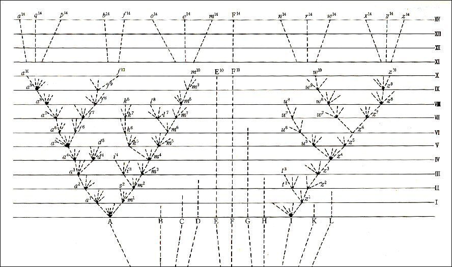

第四章 自然淘汰、すなわち最適者の生存
前章で簡単に説明した生存闘争は、変異に関してはどのように作用するであろうか？ 我々が人間の支配下では非常に強力であるのを見た淘汰の原則は自然の下でも適用できるであろうか？ 私は、それが極めて有効に作用し得ることを我々は知るであろうと考える。我々の飼育生物に現れ、また自然状態の動植物に程度少なく現れる無数の小変異と個体差に留意し、同様に遺伝する傾向の強さに留意しよう。飼育の下では生物体全体がある程度可塑的になると間違いなくいうことができる。しかし、飼育生物においてほとんど普遍的に見られる変異性は、フッカーとエイサ・グレイが適切に述べているように、直接人間によって生み出されたのではない。人間は変種を創造することもできないし、その発生を妨げることもできないのである。人間はその現れたものを保存し累積することができるだけである。無意識に彼は生物を新しい変化しつつある生活条件にさらし、その結果変異性が生じるのである。しかし自然の下でもそれと同様の条件変化が起こるかも知れないし、実際起こっているのである。またすべての生物同士とその生活の物理条件との相互関係がいかに限りなく複雑で緊密であるかに留意し、その結果として、変化している生活条件の下では、限りなく変異した構造の多様性が各生物にとってどれほど有用であるかに留意せよ。そのとき、人間にとって有用な変異が確かに起こったのを見ながら、大きく複雑な生命の闘いの中で、各生物にとって何らか有用な他の変異が多くの連続する世代の経過の中で生じたということを、有りそうもないことと見なすことができるであろうか？ もしこのような変異が起こるとすれば、我々は（生存の可能性のあるものよりも多くの個体が生まれることを想起して）、たとえわずかでも他より優れた点をもつ個体が、生存と仲間の生産に対して最良の機会をもつことを疑うことができるであろうか？ これに対し、最小限度でも有害な何らかの変異が厳しく滅ぼされることは確かであるように感じられる。このように有利な個体差および変異の保存と有害なものの滅亡を、私は『自然淘汰』または『最適者の生存』と名づけた。有益でもなく有害でもない変異は自然淘汰によって影響されないであろう。そして多分、ある多形的な種に見られるように不安定な要素として残されるか、あるいは生物体の性質および条件の性質によって結局は固定されてしまうか、いずれかであろう。
幾人かの著述家は『自然淘汰』という言葉を誤解したりあるいは反対したりした。単にその生活条件の下に生じ、そしてその生物に有益な変異が保存されることを意味するにすぎないのに、ある者は自然淘汰が変異性を誘発するものだと想像した。農業家が人為淘汰の強力な効果について語るのに異論を唱えるものはいない。そしてこの場合、人間がある目的のために選択する、自然によって与えられた個体差がまず生じなければならない。他のある者は、淘汰という言葉は変容する動物における意識的選択を意味すると反対した。そして植物は意志作用をもたないから、自然淘汰は彼らに適用できないと強調した！ 言葉の文字どおりの意味からは、もちろん自然淘汰というのは誤った名称である。しかし化学者が諸元素の選択性親和力について語ることにかつて誰が反対したであろうか？ ――酸が好んで結合する塩基を選択するとは厳密にはいえないのに。自然淘汰を私が一つの活力もしくは神性として語っているともいわれた。しかしある学者が引力を惑星の運動を支配するものとして語ることに誰が反対するであろうか？ このような比喩的な表現が何を意味し、何を含んでいるかは誰でも知っている。これらは簡潔さのためにはほとんど必然なのである。また『自然』という言葉の擬人化を避けることも同様に困難である。しかし私は、『自然』とは単に多くの自然法則の総合作用および成果を意味するものとし、そして法則とは、我々によって確かめられた事象の因果的連鎖を意味するものとする。少し慣れてくればこのような皮相な反対論は忘れられるであろう。
真実と思われる自然淘汰の経過を最もよく我々に理解させるのは、ある軽微な物理的変化、例えば気候の変化を受けている地域の例であろう。そこの棲息者の均衡のとれた数はほとんど直ちに変化を受け、ある種はおそらく絶滅するであろう。すでに見たように、各地域の棲息者が相互に結び付いている状態は密接かつ複雑であるから、棲息者の数的均衡の変化は、気候自体の変化とは無関係に他に重大な影響を与えるであろうと結論することができる。もしこの地域の境界が開放されていたとすれば、確かに新しい形態が移住してくるに違いない。そしてこれがまた幾つかの先住者の関係を甚だしく撹乱するに違いない。導入された一本の樹木あるいは一匹の哺乳動物の影響がどんなに強力であるかについて前に示したことを思い出そう。しかし島あるいは部分的に障害物で囲まれた地域の場合のように、より一層適応した新しい形態が自由に入ってくることができないならば、原住者のあるものが何らかの変容を受けたときには、それは自然の秩序の中で確かにより一層満たされる場をもつであろう。なぜならもしその地域が移住者に開放されていたならば、これらの同じ場は侵入者によって奪われたに違いないからである。このような場合では、ある種の個体に何らかの利益を与えたわずかな変容は、変化した生活条件に彼らをよりよく適応させることで保存される傾向をもつはずである。そして自然淘汰は自由に改良の作業を行う余地をもつに違いない。
第一章で述べたように、生活条件の変化が変異性を増大する傾向を与えることを信ずべき十分な理由がある。そして前述の場合では条件が変化したのであって、これは有利な変異の起こる良い機会を与えることで明らかに自然淘汰に好都合であろう。このような変異が起こらなければ自然淘汰は何もできないのである。『変異』という言葉の中には単なる個体差も含まれていることを忘れてはならない。人間がある方向に個体差を積み重ねることによって飼育動植物に偉大な結果を生み出すことができるように、自然淘汰もまた、比較にならないほど永い作用時間をもつことで、はるかに容易にそれをなし得たのである。また、自然淘汰が変異する棲息者の幾つかを改良することで新しい未占領の場は満たされるが、それが残されるためには気候の変化のような大きな物理的変化あるいは移住を妨げる何らか普通でない隔離が必要である、とは私は信じていない。なぜなら各地域のすべての棲息者は見事に均衡を保った力で互いに闘争しているので、一つの種の構造または習性における極めてわずかな変容がしばしば他を凌ぐ利点を与えるからである。そして同じ種類のさらに一層進んだ変容は、その種が同じ生活条件の下に存続し、同様の生存と防衛の方法によって利益を得ている間は、しばしばその利点を一層増大させるであろう。土着のすべての棲息者が現在相互に、また生活の物理的条件にも完全に適応していて、どの棲息者もこれ以上よく適応したり改良したりすることはできない、というような国はどこにもない。なぜならすべての国で土着の生物が帰化生物によって征服されており、その結果ある外来者はその土地を確実に占領しているからである。このように外来者はあらゆる国で土着のあるものを打ち負かしているのであるから、我々は土着のものが有利な変容をすることによって侵入者に対してもっとよく抵抗できたかも知れないと結論して差しつかえないであろう。
人間でさえも淘汰の組織的無意識的方法によって偉大な結果を生み出すことができ、また確かに生み出したのであるから、それを自然淘汰にできないことがあろうか？ 人間は外面的で眼に見える形質に働きかけるだけである。もし最適者の自然的保存あるいは生存を擬人化することが許されるならば、自然はある生物に有益な場合を除き外観に対しては何の注意も払わない。自然はあらゆる内部器官に、体質上のあらゆる微妙な差異に、生命の機構全体に、作用することができる。人間は人間の利益のために選択する。自然は自然が世話をする生物のためにのみ選択する。選択されたあらゆる形質は、その淘汰の事実が暗示しているように自然によって十分鍛錬されている。人間は同じ地域の中で様々な気候の動植物を保育する。人間はある特別な、また適当な方法で選択したそれぞれの形質を鍛錬することは滅多にない。長い嘴の鳩も短い嘴の鳩も同じ食物で養う。長い背あるいは長い脚の四足獣を何らかの特別な方法で鍛錬することをしない。長い毛の羊も短い毛の羊も同じ気候にさらしておく。人間は最も活力のある雄が雌のために闘争することを許さない。人間はすべての劣等な動物を厳しく滅ぼすことをせず、かえってそれぞれの季節変化をとおして、力の及ぶ限りすべての生産物を保護する。人間はしばしば半奇形の形態によって淘汰を始める。あるいは少なくとも、十分眼をひいたり、明らかに人間に有用であるような目立った変容によって淘汰を始める。自然の下では、構造または体質の最も些細な差異でも、生活闘争における巧みに釣り合った天秤を回転させることができ、そして保存され得る。人間の欲望と努力の何とはかなく、人間のもつ時間の何と短かいことか！ その結果、自然が全地質時代にわたって蓄積した結果と比べ、人間の成果の何と貧弱なことか！ しからば自然の生産物が人間の生産物よりもその形質においてはるかに『より適正』であり、最も複雑な条件に対して無限により良く適応しており、明らかにはるかに高い技量の冴えを示すことを我々は不思議に思うことができるであろうか？
比喩的にいえば、自然淘汰は世界中で時々刻々、最も些細な変異を詳細に調査しており、悪いものを除き良いものをすべて保存し集積している。《機会があればいつでもどこでも》、黙々と誰にも気づかれずに、それぞれの生物を生活の有機的無機的条件との関連において改良することに従事している。我々には時間が年代の経過を印すまでは、これらの緩慢な変化の進行について何も見えない。そして大昔の地質時代に関する我々の知識は非常に不完全なので、現在の生命の形態は昔のものと異なっているということを知るだけである。
ある種に大量の変容がもたらされるためには、おそらく長時間が経過した後に一度形成された変種が再び変異するか、以前と同様の有利な性質の個体差を現し、そしてこれらが再び保存されなければならず、またこうして一歩一歩進んでゆかなければならない。同じような個体差が永続的にくり返されるのを見れば、これを無責任な仮定と見なすことはできない。しかしそれが真実かどうかは、この仮説がどの程度まで自然の一般現象と調和しそれを説明するかを見ることによってのみ判断することができる。一方、可能な変異の合計は厳密に限られた量であるという通常の信念も同様に単純な仮定にすぎないのである。
自然淘汰は単に各生物の利益をとおして、また利益のために作用し得るにすぎないが、我々が非常につまらない価値のものと見なしがちな形質や構造も作用を受けるのである。食葉昆虫が緑色であり、樹皮を食うものがまだらの灰色であり、また高山のライチョウが冬の間白色であり、アカライチョウがヒースの色をしているのを見るとき、我々はこれらの色合いがこれらの鳥や虫を危険から保護する働きをなすことを信じなければならない。ラィチョウは、もし生涯のある時期に滅ぼされることがなければ無数に増加するに相違ない。彼らが猛禽によって大いに害されることはよく知られている。また鷹はその視力によって獲物を捕えに行く――ヨーロッパ大陸の諸地方では、白い鳩は一番殺され易いので飼わないように警告されているほどである。それゆえ、自然淘汰はライチョウの各種類に適当な色を与え、かつ一度得た色をそのまま不変に保ってゆく働きをするかもしれない。また我々はある特殊な色の動物が時折滅ぼされることをほとんど効果のないことであると考えてはならない。白い羊の群れの中で極めて薄い黒線のある小羊を殺してしまうことがどんなに肝要であるかを想起すべきである。ヴァージニアにおいてペイント・ルートを餌とする豚の色がその生死を決定することはすでに見た。植物ではその果実の軟毛や肉の色は、植物学者によって最も些細な価値の形質と見なされている。しかし優れた園芸家ダウニング（Downing）から聞いたところでは、合衆国ではすべすべした果実は軟毛のある果実よりもクルクリオ（Curculio）〔ゾウムシの一種〕という甲虫の害を受けることがはるかに多く、紫色のプラムは黄色のプラムよりもある病気に侵されることがはるかに多い。ところが他の病気は他の色の果肉の桃よりも、黄色の桃を襲うことがはるかに多いという。もし人工の補助があるにもかかわらず、これらのわずかな差異が幾つかの変種を栽培する場合に大きな差異を生じるものとすれば、樹木が他の樹木や敵の大群と闘争しなければならない自然状態では、このような差異は確かに、滑らかな果実か軟毛のある果実か、黄色の果実のものか紫色のものか、そのいずれの変種が成功するかを効果的に決定するであろう。
無知な我々の判断による限りでは全く重要でないように見える種の間の多くの小さな差異点を観察するに当たって、我々は気候、食物等が疑いもなくある直接の効果を生じたことを忘れてはならない。一つの部分が変異し、その変異が自然淘汰によって累積されるときは、相関の法則によってしばしば全く予期しない性質の他の変容が続いて現れることを、心にとどめておくこともまた必要である。
飼育の下で、生涯のある特殊な時期に現れる変異が子孫において同じ時期に再び現れる傾向のあることを我々は知っている――例えば、我々の野菜類や作物の多くの変種の種子の形、大きさ、および味において、カイコの変種の幼虫期やまゆ期において、家禽の卵とそのひなの羽毛の色において、ほとんど成熟したときの羊や牛の角においてである。――同様に自然状態では、自然淘汰はある年齢の生物に対し、その年齢における有利な変異の蓄積と、対応一致する年齢におけるそれらの遺伝によって作用を及ぼし、それを変容させることができる。もし風によってますます広く散布される種子をもつことがある植物にとって利益であれば、自然淘汰によってそれが達成されることは、綿栽培者が淘汰によってそのワタノキのさやの中の綿毛を増加し改良することよりも困難なことであるとは私は思わない。自然淘汰は成虫が関与するのとは全く異なる二十もの偶発事象に対して、昆虫の幼虫を変容、適応させるであろう。そしてこれらの変容は相関によって成虫の構造にも影響するであろう。反対に成虫の変容はまた幼虫の構造に影響するであろう。しかしすべての場合に、自然淘汰はそれらの変容が有害ではないことを保証するであろう。というのは、もしそれが有害であったならその種は絶滅してしまうはずだからである。
自然淘汰は親に関連して子の構造を変容し、子に関連して親の構造を変容する。社会的動物では、もし淘汰された変化によって共同社会が利益を得るならば、自然淘汰は各個体の構造を全共同社会の利益に適応させるであろう。自然淘汰の成し得ないところは、一つの種の構造をそれに何の利点も与えることなしに他の種の利益のために変容することである。この効果に関する記述が博物学の著作に見出されるけれども、私は研究に値するような事例を見出すことができない。一動物の生涯でたった一度しか使用されない構造でも、それがその動物にとって非常に重要なものであれば、自然淘汰によってある程度変容させられるであろう。例えばある昆虫のまゆを破るときにだけ使われる大きな顎――あるいは卵を破るのに使われるまだ艀化しないひなの嘴の硬い切っ先がそれである。嘴の短い宙返り鳩の最良のものは、卵から出ることのできるものよりも卵の中で死ぬもののほうが数が多いと主張されている。そこで愛好家達は艀化の動作を助けてやるのである。それゆえ、もし自然が成熟した鳩の嘴をその鳥自身の利益のために非常に短くしなければならなかったとしても、その変容の過程は極めて徐々にしか行われないであろう。そしてそれと同時に卵の中で、最も強力で最も硬い嘴をもっているすべての幼い鳩が厳格に選抜され、弱い嘴をもつものはすべて死滅するであろう。殻の厚さは他のあらゆる構造と等しく変異することが知られているから、あるいはもっと華奢でもっと割れ易い殻が選抜されるかも知れない。
あらゆる生物には、その自然淘汰の過程にほとんど、あるいは全く影響のない甚だ偶然的滅亡があるに違いない、ということをここに述べておくのがよいであろう。例えば年々莫大な数の卵や種子が餌食となり、そしてこれらは敵から防護されるような具合に変異した場合にのみ、自然淘汰によって変容され得るのである。けれどもこれらの卵または種子の多くは、もし滅ぼされなかったならば、たまたま生き残ったものよりも一層よくその生活条件に適応した個体を生じたことであろう。また成長した動物および植物の莫大な数も、それらが条件に最もよく適応したものであると否とを問わず、年々偶然の原因によって滅ぼされなければならない。それは、他の点ではこの種に有益であるような構造または体質の変化によっても少しも軽減されないであろう。しかしある地方において生存し得る数がこのような原因によって全く抑制されてしまわなければ、成体の滅亡がどんなにひどくても――あるいは卵や種子の破壊がわずか百分の一か千分の一しか発育しないほどひどくても――これらのあるものは生き残り、そして有利な方向に向かう何らかの変異性が存在すると仮定される最もよく適応した個体は、十分適応していないものよりもその種類を増加させてゆくであろう。もし、実際にしばしば起こるように、今示した原因によって全部の数が抑制されるならば、自然淘汰はある有益な方向に向う力をもたないであろう。しかしこれは他の場合、他の方法における自然淘汰の有効性に対して正当な反論とはならない。というのは多くの種が常に同じ地域で同時に変容と改良を受けると想定しなければならない理由は何もないからである。
雌雄淘汰
飼育の下である特質がしばしば片方の性に現れ、遺伝的にその性に固定することがあるのであるから、自然の下でもまたそうであることは疑いない。こうして、時々実際に起こるように、二つの性が異なる生活習性に関して自然淘汰をとおして変容を受けることが可能となる。あるいは、普通に起こるように、一つの性が他の性との関連上変容を受けることが可能となる。私のいう『雌雄淘汰』について私がここに数言を費やした理由はこれである。この形の淘汰は他の生物または外的条件に関連しての生存闘争には依存せず、一つの性、一般的には雄性の個体の間の異性所有のための闘争に依存する。その結果は競争に敗れたものの死ではなく、その子孫が少なくなったりあるいは無くなることである。それゆえ雌雄淘汰は自然淘汰ほど厳しくない。一般に、最も活力のある雄、自然界における彼らの場に最もよく適した雄が最も多くの子孫を残すであろう。しかし多くの場合においては、勝利は全般的な活力によるよりは、むしろ雄性に限られた特殊な武器をもつことによる。角のない牡鹿またはけづめのない雄鶏は多くの子孫を残す機会に乏しいであろう。雌雄淘汰は常に勝利者に繁殖を許すことになるので、確かに不屈の勇気を与え、角に長さを、またけづめのついた脚で打つために翼に強さを与えるであろう。それは残酷な闘鶏家がその優良な雄鶏を注意深い淘汰によって選び出すのとほとんど同じ方法である。自然の序列においてどのくらい低いところまで闘いの法則が通用するのか私は知らない。アリゲーターの雄はその雌を得るために争い、怒号し、またインディアンの出陣踊りのように旋回することが記述されている。また鮭の雄が終日闘っているのが観察されている。クワガタムシの雄は、時々他の雄の巨大な大顎で傷つけられている。またある膜翅目昆虫の雄が一匹の特定の雌のために争い、雌はその傍に外見上闘争に無関係な傍観者のように坐っていて、やがて勝利者とともに退いて行くということを、比類のない観察者ファーブル（Fabre）氏がしばしば観察している。この闘いはおそらく多婚性動物の雄の間で最も激烈であり、そしてこれらの動物は大抵特殊な武器を備えているように思われる。食肉動物の雄はすでに十分武装しているが、これらの動物およびその他の動物には、例えばライオンのたてがみや鮭の雄の曲がった顎のような特殊な防御手段が雌雄淘汰によって与えられることもある。というのは楯もまた剣や槍と等しく勝利に必要なものだからである。
鳥類の間ではこの競争はしばしばもっと穏和な性質のものである。多くの種の雄の間で、その鳴声によって雌をひきつけようとする最も激しい張り合いのあることは、この問題に注意してきたすべての人の信じているところである。ギアナのイソヒヨドリ、ゴクラクチョウその他は一箇所に集合する。そして雄は相次いで入念に注意してその華麗な羽を広げ、できるだけ気取ってそれを見せびらかす。彼らはまた雌の前で奇妙な道化を演じる。雌は傍でそれを見物していて、最後に一番気に入った相手を選ぶのである。閉じ込められている鳥を仔細に観察した人々は、鳥が往々個別的な好みと嫌悪を示すことをよく知っている。例えばＲ・ヘロン（Heron）卿は、まだらの雄のクジャクがいかに著しくすべての雌鳥をひきつけたかを書き記している。私はここに必要な細目に入ることができない。しかし人間がその美の規準に従って短期間にチャボに対して美と優雅な姿態を与え得たとすれば、雌鳥は自分の美の規準に従って何千世代かの間最も声の良い、あるいは最も美しい雄を選択することによって顕著な効果を生じたことであろうことを疑う理由はないのである。ひなの羽と比較しての雄鳥と雌鳥の羽に関する周知の若干の法則は、異なる年齢に生じ、またそれに対応する年齢において雄に対してのみか、あるいは雌雄両性に対して遺伝される変異に及ぼす雌雄淘汰の作用によって部分的に説明できる。しかしここではこの問題に立入る余裕がない。
私の信じるところでは、このようにある動物の雄と雌が同じ一般的生活習性をもっていても、構造、色彩、あるいは装飾において違っているときは、その相違は主として雌雄淘汰によって生じたのである。換言すれば、雄の個体が何世代も継続する間に、その武器、防御の手段、あるいは魅力において他の雄に優った若干の軽微な利点を保有し、それをその雄の子孫にのみ遺伝してきたことによって生じたのである。とはいえ、私は雌雄間の差異をすべてこの作用に起因させようと願っているのではない。なぜなら我々は飼育動物の場合に、雄に現れてそれに固定される特質で、外見上人為淘汰によって少しも増大されなかったものを知っているからである。野生のシチメンチョウの雄の胸にある毛の房は何の用途もなく、またそれが雌鳥の眼に装飾的に見えるかどうかも疑わしい。――実際、もし飼育の下にこんな房が現れたならば、それは奇形だといわれたに違いない。
自然淘汰の作用すなわち適者生存の例証
私の信じる自然淘汰の作用がどのようなものであるかを明らかにするために、私はここに一、二の想像的例証をあげることを許して貰いたい。今狼が、あるものは知恵によって、あるものはその強さによって、あるものは駿足によって種々の動物を餌食として手に入れる場合をとろう。そして狼が最も食物に窮する季節の間に、例えば鹿のような最も足の早い餌食がその地域で何かの変化から数を増し、他の餌食が数を減らしたと仮定しよう。このような情況の下では、最も速く最も細身の狼が生き残る最良の機会を有し、従って保存、あるいは選択されたであろう。――ただし彼らがこの時期あるいは他の時期にほかの動物を餌食にしなければならないときには、その餌食を征服する強さを常に保持していなければならない。人間が注意深い組織的淘汰によって、あるいは各人にはその品種を変容させるという考えはなく、ただ最良の犬を保持しようとするところから生じる無意識的淘汰によってグレイハウンドの速力を改良できるのと同様の結果になることを疑う理由はない。ピアス（Pierce）氏によると、合衆国のキャッツキル山脈に棲んでいる狼には二つの変種があって、一つは軽快なグレイハウンドのような形態で鹿を追跡し、もう一つは体がもっと大きく脚が短くより頻繁に牧羊の群れを襲う、という話を付け加えておきたい。
前記の例証では、私は最も細身の個々の狼について語ったのであって、何らか著しい特徴のある変異が保存されたことを語ったのではないことに気づかなければならない。本書の前の諸版では、私はこの二つのうち後者がしばしば起こったかのように述べたことが時々ある。私は個体差が非常に重要であることを知った。そしてこのことは私に、多かれ少なかれ価値のあるすべての個体を保存し、劣等なものを滅ぼすことによる人間の無意識的淘汰の結果を十分に検討させた。私はまた、自然状態では奇形のような構造上のある偶然的偏向が保存されることは稀であること、そして最初は保存されたとしてもその後の普通の個体との交雑によって一般に失われるであろうことを見た。にもかかわらず、私は North British Review（一八六七年）の中の価値ある論説を読むまでは、わずかであるか顕著であるかを問わず、単一の変異が永存されることのいかに稀であるかを正しく評価していなかった。その著者は、一対の動物がその生涯に二百匹の仔を生み、その中から種々の滅亡原因により、平均して二匹だけがその種類の生産のために生き残る場合をあげている。これは高等動物の大多数に対していささか極端な見積もりであるが、下等生物の多くの場合には決してそうではない。彼は次に、もしある状態に変異した一個の個体が生まれ、これに他の個体の二倍の生存の機会を与えても、なお可能性としてはそれが生き残ることを強く妨げることを示している。仮にそれが生き残り増殖して、その仔の半分が有利な変異を遺伝したとしても、それでもなお、この論者が証明しているように、その仔は生き残り繁殖する機会をわずかに多く有するにすぎないであろう。そしてこの機会も代を重ねる間に減少してゆくであろう。これらの説明の妥当性は争うことのできないものと私は思う。例えばある種類の鳥は湾曲した嘴を有することでより一層容易にその食物を得ることができるものとし、そして一羽の鳥が強く湾曲した嘴をもって生まれ、その結果繁栄したとしても、それでもなおこの一個体が普通の形態を排除してその種類を永続させる機会は極めて乏しいであろう。しかし飼育の下で起こるところを見て判断すれば、多少強く湾曲した嘴をもっている個体の多数が多くの世代を通じて保存され、またまっすぐな嘴を有するもののさらに多くの数が滅ぼされるという結果を生じるであろうことはほとんど疑うことができない。
けれども誰も単なる個体差とは評価しないようなやや顕著な変異は、相似の生物体が相似の作用を受ける結果としてしばしばくり返されることを見逃してはならない。――この事実については飼育生物の中から多数の例をあげることができる。このような場合においては、実際には変異する個体が新たに得たその形質をその子孫に伝えなかったとしても、現在の同じ条件が続く限りは同じように変異する一層強い傾向をその子孫に伝えてゆくに違いない。この同じように変異する傾向はしばしば非常に強かったので、同種のすべての個体がどんな形の淘汰の助けもなしに同じように変容したことは、これまたほとんど疑うことができない。これについては幾つかの例があげられるように、個体の三分の一、五分の一もしくは十分の一だけがこのように影響を受けたかも知れない。例えばグラバ（Graba）が見積もったところによると、フェロー諸島におけるウミガラスの約五分の一は、以前ウリア・ラクリマンス（Uria lacrymans）という名の下に別種として認められていたほど著しい特徴をもった一変種から成っている。このような場合に、もしその変異が有益な性質のものであれば、適者生存によって元の形態は間もなくこの変容形態に取って代わられるに違いない。
交雑がすべての種類の変異を排除する効果については後で再び述べるが、大抵の動物と植物は彼らの固有の郷土を守り続けるものであって、不必要に放浪することはない、ということを述べておこう。このことは渡り鳥でさえも認められるのであって、彼らはほとんど常に同一地点に帰ってくるのである。従って新しくできた各変種は一般に最初は局地的であり、これは自然状態の下における変種の共通法則と思われる。その結果、同じように変容した個体は速やかに小集団を成して一緒に生存し、またしばしば相互の間で繁殖するであろう。もしその新変種が生存の闘いで勝利を得たならば、それは絶えず増大する領域の境界上で変化しない個体と競争し、これに打ち勝ちながら徐々に中心地から広がってゆくであろう。
自然淘汰の作用の一層複雑な他の事例をあげることも価値があろう。ある植物は、見たところ樹液からある有害物を除去するためと思われる甘い液を分泌する。これは例えば、あるマメ科植物では托葉の根元の腺で、またセイヨウバクチノキでは葉の裏の腺で営まれる。この液は、量は少ないが昆虫によって貪欲に探し求められる。しかし昆虫の来訪はこの植物に何の利益ももたらさないのである。さて、この液あるいは蜜がある種の幾つかの植物の花の内部から分泌されたと仮定しよう。蜜を求めてくる昆虫は花粉でほこりだらけになり、そしてしばしばそれを他の花へ運搬するに相違ない。こうして同種の二つの個体の花は交配することになろう。そして交配の作用は、十分証明できるように活力ある実生苗を生じ、従って繁栄と生存の最良の機会をもつであろう。最も多く蜜を分泌する最も大きい腺あるいは蜜腺をもつ花を生じた植物は、最も頻繁に昆虫が訪れ最も頻繁に交配するので、結局それは優勢となり、地方的変種を形成するであろう。また訪れた特定の昆虫の大きさや習性に対して、幾らかでも花粉の運搬に便利であるように
雄蕊と雌蕊を配置した花も同様に利益があるであろう。昆虫が花蜜でなく、花粉を集めるために花を訪れる場合をとってもよい。花粉は受精という唯一の目的のために造られたものであるから、その破壊はその植物にとって単に損失になるだけのことのように見える。しかしこの花粉を食う昆虫によって、最初は偶然的に、後には習慣的に花から花へ少量の花粉が運ばれ交配が成されれば、花粉の十分の九が破壊されても、その植物にとってはこうして掠奪されることがやはり大きな利益であろう。そしてますます多くの花粉を生じ、より大きな
葯を有する個体が選択されるであろう。
植物が前述の過程を永く継続することによって昆虫を非常にひきつけるようになったときは、昆虫は、そのつもりはなくとも規則的に花から花へ花粉を運搬するであろう。そして彼らがこれを効果的に行うことを私は多くの著しい事実によって容易に示すことができる。ここではただ一例をあげ、併せて植物の雌雄の分離への一段階を例証しよう。あるホリー（holly）〔モチノキ科のセイヨウヒイラギの類〕はただ雄花だけをもち、その花はやや少量の花粉を生じる四本の雄蕊と、痕跡的な一本の雌蕊をもっている。別のホリーはただ雌花だけをもち、その花は十分な大きさの一本の雌蕊と、一粒の花粉も見つけられないしなびた葯をもつ四本の雄蕊をもっている。かつて一本の雄の木から正確に六十ヤード離れたところにある雌の木を発見したことがあり、その異なる枝から取った二十個の花の柱頭を顕微鏡で調べて見たが、どれにも例外なく少量の花粉があり、中には多量にあるものもあった。その前の数日間は風が雌の木のほうから雄の木のほうに吹いていたので、花粉が風によって運ばれることはあり得なかった。天候は寒くかつ荒れていたので蜂にとって都合は悪かったが、それにもかかわらず私が調べた雌花のすべては、蜜を求めて木から木に飛び廻った蜂によって効果的に受精されていたのである。だが我々の仮想的事例に戻ろう。植物が昆虫を非常にひきつけるようになり、花粉が規則的に花から花へ運搬されるようになるや否や、直ちに他の過程が始まるであろう。博物学者は誰でもいわゆる『生理的分業』の有利性を疑わない。それゆえ我々は、植物にとって一つの花あるいは一つの木に雄蕊のみを生じ、他の花または他の木には雌蕊のみを生じることは有利であるに違いないと信じることができるのである。栽培され新しい生活条件の下に置かれた植物では、時々雄性器官が、また時には雌性器官が多少とも無能力となることがある。今もしこのようなことが自然の状態でごくわずかでも起こるものと仮定すると、花粉はすでに規則正しく花から花へ運ばれており、また植物の雌雄がより完全に分離することは、分業の原則上有利であるのだから、最終的に雌雄の完全な分離が成し遂げられるまでますますこの傾向は増大し、個体は絶えず利益を得、あるいは選択されるであろう。種々の植物における、二形性やその他の方法による明らかに現在進行中の雌雄分離の様々な段階をここで示すことはあまりに多くの紙面をふさぐであろう。しかしエイサ・グレイによれば、北アメリカにおけるホリーのある種は正確に中間の状態にあり、あるいは氏の表現によれば、多少とも雌雄異株的雑性花であるということを付け加えておこう。
ここで話を蜜を吸う昆虫に転じよう。我々が継続した淘汰によって徐々に蜜を増大させてきた植物を普通の植物と仮定し、そしてある昆虫がその蜜を主な食物としていたと仮定する。私は蜂が時間を節約するのにどれほど気を使うかを示す多くの事実をあげることができる。例えばほんの少しの労力を厭わなければその口から入ることのできるような花の基部に、孔を少し開けて蜜を吸う習性が彼らにはある。このような事実を念頭に置いて考えれば、ある情況の下では、吻の曲がり方や長さなどの我々には分からないほどわずかな個体差が蜂あるいは他の昆虫を利し、そのためにある個体は他よりも素早く食物を獲得することができる、ということを信じることができ、従って彼らの属した集団が繁栄して同じ特徴を遺伝する多くの群を生じるであろう、ということを信じることができる。普通のムラサキツメクサとベニバナツメクサ（Trifolium pratense and incarnatum）の花冠の筒状部は、ちょっと見ただけではその長さが違っているようには見えない。しかるにミツバチはベニバナツメクサからは容易に蜜を吸い取ることができるが、普通のムラサキツメクサからはできないのであって、これを訪れるのはマルハナバチだけである。従って野を覆うムラサキツメクサの貴重な花蜜の豊かな供給もミツバチにとっては意味がない。ミツバチがこの蜜を甚だ好んでいることは確かである。なぜなら私は秋だけではあるが、多くのミツバチがマルハナバチによって筒状部の基部に開けられた孔から蜜を吸うところを何度も見たからである。ミツバチの来訪を決定するこの二種類のクローバーにおける花冠の長さの差はきわめて小さなものに違いない。というのは、確かな事実として聞かされたところによると、ムラサキツメクサの刈り取られて二度目の収穫の花は幾らか小さく多くのミツバチがこれを訪れるという。私はこの話が正確なものかどうか知らない。また一般に普通のミツバチの単なる変種と認められ自由にそれと交雑するリグリアバチがムラキツメクサの蜜に達してこれを吸うことができるという、公刊されている別の報告が果たして信用のおけるものかどうかも知らない。ともかくこの種類のクローバーの豊富な地域では、ミツバチにとって少し長いかあるいは異なった構造の吻をもっていることが非常に有利であろう。一方、このクローバーの受精能は全くその花を訪れる蜂に依存するのであるから、もしどこかの地域でマルハナバチの数が稀少になったとすれば、この植物にとってもっと短いか、あるいは切れ目のもっと深い花冠をもちミツバチがその花を吸えるようになることが非常に有利となろう。こうして私は双方共に有利なような構造上の小さな偏向を現したすべての個体の継続的保存によって、花と蜂とが同時に、あるいは前後して徐々に変容し完全に相互に適応するようになる方法を理解することができるのである。
上述の仮想的事例をもって例証したこの自然淘汰の学説が、チャールズ・ライエル卿の『地質学の例証としての大地の最近の変化』についての高貴な見解に対して最初に主張されたのと同じ反論を招くことは、私のよく気づいているところである。しかし我々は今なお働いている諸要因が、最も深い谷の切り通し、または奥地の長い絶壁の形成を説明するのに用いられたときに、それは取るに足りないとか無意味だとかいわれるのを今日ではあまり聞かない。自然淘汰は、その一つ一つが保存された生物にとって利益であるような小さな遺伝的変容の保存と累積とによってのみ作用するのである。そして近年の地質学が、ただ一度の洪水の波によって大渓谷の切り通しができたというような見解をほとんど追放してしまったように、自然淘汰は新しい生物の引き続く創造、あるいはその構造の大きな突然の変容の見解を追放するであろう。
個体間の交雑について
私はここでちょっと脇道に入らねばならない。両性の分離している動物および植物の場合には、出産の度ごとに（奇妙なそしてまだよく分かっていない単為生殖の場合を除き）必ず二つの個体が結合しなければならないことはもちろん明白である。しかし両性体の場合にはこのことは明白とはいえない。とはいえすべての両性体において二つの個体が、偶然的にか習慣的にか、その種族の生殖のために結合することを信ずべき理由がある。この見解は大分前にシュプレンゲル（Sprengel）、ナイト（Knight）、およびケールロイター（Koelreuter）によって、不確かな形で提唱されていた。我々はほどなくこのことの重要性を知るであろう。しかし私は十分な検討のために用意した材料を持っているのであるが、ここではこの問題をごく簡単に扱わなければならないのである。すべての脊椎動物、すべての昆虫、および幾つかの他の大きな群の動物は出産の度ごとに
番う。最近の調査により、両性体と思われていたものの数は大いに減少した。そして本当の両性体の多くが番うのである。すなわち二つの個体が生殖のために規則正しく結合する。このことが我々にすべて関係する。しかし確かに習慣的には番わない多くの両性体の動物がなお存在しており、そして植物の大多数は両性花である。これらの場合に、二つの個体が生殖のためにいつも協力すると仮定するのはどういう理由があるのか？ と問われるであろう。ここでは細論に立ち入ることが不可能なので、私は幾つかの一般的考察を信頼しなければならない。
まず第一に、私は非常に沢山の事実を集め数多くの実験を行ったが、それらの示すところでは、飼育家のほとんど普遍的信念と一致して、動物および植物における異なる変種間、あるいは同じ変種であるが血統の違う個体間の交雑は子孫に活力と多産性を与え、一方《近親》交配は活力と繁殖力を減少させる。これらの事実だけで、どんな生物も世代の永続のためには自家受精をしないということが自然の一般的法則であり、他の個体との折にふれての――おそらくは長い間隔をおいての――交配は欠くことのできないことであるということを私に信じさせる。
これが自然の一法則であるという信念に立てば、我々は次のような、他のどんな見解でも説明できない幾つかの大きな部門の事実を理解できると思う。雑種育成家は誰でも、湿気にさらすことが花の受精にとってどんなに不利益であるかを知っている。それなのにどんなに多くの花がその葯や柱頭を外気に完全にさらしていることか！ 植物の自身の葯と雌蕊とが互いに接近していてほとんど自家受精を保証しているにもかかわらず時折の交配が欠くことのできないものならば、他の個体から花粉が入るのを完全に自由にしているということによって、このような器官の露出状態が説明されるであろう。一方多くの花は、例えば多くの蝶形花科（Papilionaceous）すなわちマメ科のように、その結実器官は密閉されている。しかしこれらはほとんど常に、昆虫の来訪に関連して見事なそして奇妙な適応を示す。多くの蝶形花にとって蜂の来訪は極めて必要なことであって、もしその来訪が妨げられたならばその繁殖力は非常に減退するのである。ところで、昆虫が花から花へ飛び廻りながら花粉を一つの花から他の花へ運ばないということはほとんどあり得ないことであって、これは植物にとって非常な幸運である。昆虫はラクダの毛の筆のような作用をするのであって、受精を保証するには、同じはけで一つの花の葯と次に他の花の柱頭にちょっと触れるだけで十分である。しかし蜂がこのようにして異なる種の間に多くの雑種を生み出すと想像してはならない。なぜかというと、もし自分の花粉と他の種の植物の花粉が同じ柱頭に置かれるならば、ゲルトナー（Gaertner）が示したように、前者は非常に勢力が強いのでいつも異質の花粉の影響を消滅させるからである。
ある花の雄蕊が急に雌蕊に向かって跳びかかり、あるいは次々と徐々に雌蕊のほうに動くとき、その仕掛けは全く自家受精を確実にするためにのみ適応しているように見える。そして疑いもなくそれはこの目的に役立っている。しかしケールロイターがメギの場合にそうであることを示したように、雄蕊を跳ねさせるためにはしばしば昆虫の働きが必要なのである。そして自家受精のための特別の仕掛けをもつように見えるまさしくこの属において、もし近縁の形態または変種が互いに接近して植えられると、純粋の実生苗を育てることがほとんど不可能なほど彼らが自然に交雑することは周知のとおりである。多くの他の事例では自家受精の便宜からはほど遠く、シュプレンゲルその他の著作からも、また私自身の観察からも示すことができるように、柱頭が自身の花粉を受けるのを有効に妨げる特殊な仕掛けが存在している。例えばロベリア・フルゲンスには実に見事で精巧な仕掛けがあって、それぞれの花の無数に多くの花粉粒は、個々の花の柱頭が連結した葯から花粉を受ける用意ができる前に、すべて一掃されてしまうのである。そしてこの花は、少なくとも私の庭では昆虫の来訪を受けないので決して実を結ばないが、私は一つの花の花粉を他の花の柱頭に置くことによって多くの実生苗を育てているのである。蜂の来訪を受けるミゾカクシ属（Lobelia）の他の種は私の庭で自由に結実した。非常に多くの他の事例では、柱頭が同じ花から花粉を受けることを妨げる特別の機械的仕掛けはないが、シュプレンゲル、また最近ではヒルデブラント（Hildebrand）およびその他の人々が示し、私もそれを確証することができるように、柱頭に受精の用意ができる前に葯が破裂するか、その花の花粉が用意される前に柱頭に受精の用意ができるかのいずれかである。従ってこれらのいわゆる雌雄異熟植物は事実上両性が分離しており、常に交配が必要なのである。前に言及した相互的な二形性および三形性の植物についても同様である。これらの事実の何と奇妙なことか！ まるで自家受精の目的のためのように同一の花で花粉と柱頭の表面がこんなにも相接近して配置されているのに、非常に多くの場合に相互に役に立たないとは何と奇妙なことであろうか？ これらの事実も、別異の個体との時折の交配が利益であり、あるいは不可欠であるという見解からすれば、何と簡単に説明されることか！
キャベツ、ハツカダイコン、タマネギおよび他の若干の植物の幾つかの変種を互いに近いところで結実させると、これによって生じた実生苗の大部分が雑種であることを私は見出した。例えば私は、相接近して生長した異なった変種のキャベツの数株から二百三十三本の実生苗を育てたが、そのうちわずか七十八本だけがその種類を忠実に再現し、これらのうちにさえ完全に忠実でないものが若干あった。しかるにそれぞれのキャベツの花の雌蕊は、それ自身の六本の雄蕊だけでなく、同じ株の多くの別の花にも取り囲まれている。そしてそれぞれの花の花粉は、昆虫の媒介なしに容易にそれ自身の柱頭に達する。なぜなら、注意して昆虫の来訪を防いだ株が十分な数のさやを生じるのを私は見出したからである。ではこのような巨大な数の実生苗はどうして雑種となったのであろうか？ それは、別な《変種》の花粉はその花自身の花粉よりも強力な効果を有することに起因するに違いない。そしてこれは同じ種の異なる個体の交配によって良いものが得られるという一般法則の一部をなすのである。別な種と交雑するときには事情は逆になる。というのは、植物の自身の花粉はほとんど常に異質な花粉よりも強力であるからである。しかしこの問題については後の章で再び述べるであろう。
無数の花で覆われた大木の場合では、花粉は木から木へ運ばれることは滅多になく、せいぜい同じ木の花から花へ運ばれるだけであり、また同じ木の花は限られた意味でしか別々の個体と見なすことができないのではないか、という反対理由が持ち出されるかもしれない。私はこの異議を正当なものと信じるが、しかし自然は雌雄分離した花をもつ強い傾向を樹木に与えることによって、十分にこれに対する対策を備えている。雌雄が分離されていれば、雄花と雌花が同じ木に生じても、花粉は規則正しく花から花へ運ばれなければならない。そしてこれは、花粉が折にふれて木から木へ運ばれるのに一層よい機会を与えるであろう。すべての目に属する樹木が他の植物よりも雌雄別々になっている場合の多いことを私はこの国で見出した。そして私の求めに応じてフッカー博士はニュージーランドの樹木を、またエイサ・グレイ博士は合衆国の樹木を表に作ってくれたが、その結果は私の予想したとおりであった。もっともフッカー博士はこの規則がオーストラリアでは通用しないことを私に告げた。しかしもし大部分のオーストラリアの樹木が雌雄異熟であるとすれば、雌雄分離した花を備えているのと同じ結果を生じるであろう。以上樹木について数言を費したのは、ただこの主題に注意を喚起するためにすぎない。
話を転じて簡単に動物について述べよう。陸棲軟体動物やミミズのように、種々の陸棲種が両性動物である。しかしこれらはいずれも番う。いまだかつて私は自家受精することのできる陸棲動物を一つも見たことがない。陸上植物とこうも著しい対照をなすこの注目すべき事実は、時折の交配が不可欠であるという見解から理解することができる。なぜかというと、陸棲動物ではその受精要素の性質上、植物における昆虫や風の作用に類似した方法がないために、二つの個体の合体なしには時折の交配がなされないからである。水棲動物では多くの自家受精的両性動物がある。しかしこの場合には、水の流れが時折の交配に対する明らかな方法を提供している。私は最高権威者の一人であるハクスリー（Huxley）教授の意見も聞いてみたのだが、今日まではまだ、花の場合のように生殖器官が全く閉じられていて、外部からの接近および別の個体の時折の影響が物理的に不可能であることを示すことができる両性動物はただの一つも発見されていない。この観点からは、
蔓脚類は非常に困難な事例を示すものと私は長い間思っていた。しかし私は幸運な機会によって、二つの個体が、両者いずれも自家受精的両性体でありながら時々交配することを証明することができたのである。
動物および植物のいずれにおいても、同じ科の種あるいは同じ属の種さえも、その生物体全体は互いに密接に一致しているのに、ある種は両性体でありある種は単性体であることは、奇妙な変則として大部分の博物学者に強い印象を与えたに違いない。しかし事実上すべての両性体が時折交配するならば、彼らと単性の種との差は、機能に関する限り非常に小さいものである。
これらの幾つかの考察から、またここにあげることはできないが私の集めた多くの特殊な事実から、動物および植物において別な個体の間の時折の交配は、普遍的でないにしても非常に一般的な自然法則であるように思われる。
これは極めて錯雑した問題である。変異性――この言葉には個体差が含まれている――の量が大きいことは明らかに好都合である。個体の数の多いことは一定の期間内に有益な変異が現れるための一層よい機会を与えるので、各個体の変異性の量が少ないことを補うであろう。そして私はこれを非常に重要な成功の一要素であると信じている。大自然は自然淘汰の仕事のために永い時間を与えるが、無限の時間を与えるわけではない。なぜなら、すべての生物は自然の秩序の中でそれぞれの場を保持しようと争っているので、もしある種がその競争者に匹敵する程度に変容し、改良されなければ、その種は絶滅するからである。有益な変異が少なくとも子孫の若干のものに遺伝されるのでなかったならば、自然淘汰では何の効果もあげることができない。先祖返りの傾向はしばしばこの仕事を抑制したり妨げるであろう。しかしこの傾向は、人間の淘汰による多数の飼育品種の形成を妨げなかったのであるから、それが自然淘汰を圧倒してしまう理由がどこにあろうか？
組織的淘汰の場合には、飼育家はある明確な目的のために選択するのである。そしてもし多くの個体が自由に交配することを許されていれば、彼の仕事は完全に失敗するであろう。しかし多くの人が、品種を変えようというつもりはなくとも、ほとんど共通の完成規準をもっていて、そしてすべての人が最良の動物を求めそれから繁殖させようと試みるときには、選択された個体は隔離されないにもかかわらず、この無意識的な淘汰過程によって徐々にではあるが確実に改良が行われる。自然の下においてもこのようであろう。というのは、自然の体制においてまだ完全には占領されていない場をもつ限られた区域の中では、異なる程度であっても適切な方向に変異しつつあるすべての個体は保存される傾向があるからである。しかしもしその区域が広大であるならば、その幾つかの地方はほとんど確実に異なる生活条件を呈するであろう。そしてもし同じ種が異なる地方で変容を受けるならば、この新しく形成された諸変種はそれぞれの境界で交雑するであろう。しかし我々は第六章において、中間の地方に棲んでいる中間変種は、結局は大抵隣接の変種の一つに取って代わられるということを見るであろう。交雑が主として影響を及ぼすのは、各出産ごとに結合しかつ放浪性が大であり、また増加率の小さい動物に対してである。それゆえこのような性質の動物、例えば鳥類では、変種は一般に隔離された地域に限られるであろう。そして事実そうであることを私は見ている。時折交配するにすぎない両性生物や、同様に各出産ごとに結合するがほとんど放浪せずかつ速やかに増加できる動物では、改良された新しい変種が直ちにある場所に形成され、そこに一団を成して自らを維持し、その後に広まってゆく結果、その新変種の個体は主として相互に交わるであろう。この原則に基づいて種苗家は常に植物の大集団から種子を貯えることを好むが、これによって異種交配の機会が減少するからである。
それぞれの出産ごとに結合し、かつ速やかに繁殖しない動物でも、自由な交雑が常に自然淘汰の効果を除去すると仮定してはならない。なぜならば同じ区域の中で同じ動物の二つの変種が異なる場所に棲息すること、やや異なる季節に繁殖すること、あるいはそれぞれの変種の個体がその中で番うことを好むということを示すかなり多くの事実を、私は提出することができるからである。
交配は同じ種または同じ変種の個体について、その形質を忠実にかつ一様に保つことで、自然界で重要な役割を演じるのである。各出産ごとに結合する動物では、それは明らかにより一層効果的に作用するであろう。しかしすでに述べたように、時折の交雑はあらゆる動物と植物にわたって行われることを信ずべき理由がある。たとえそれが長い時を隔てて起こるにせよ、こうして生じた子は長く継続した自家受精から生じた子に比べれば、非常な活力と繁殖力を得ており、従って生存とその種の増殖に一層よい機会を有するであろう。こうして結局、交配の影響は時を隔てて稀に起こる場合でも大きいであろう。有性生殖をせず、結合もせず、また到底交雑することのできない極めて下等な生物では、同じ生活条件の下で形質の一様性が保たれるのは、ただ遺伝の原則と基本型から外れた個体をすべて減ぼす自然淘汰によってのみである。もし生活条件が変化して形態が変容を受ければ、こうして変容した子孫に形質の一様性が与えられ得るのは、もっぱら類似の有利な変異を保存する自然淘汰によってのみである。
孤立も自然淘汰による種の変容における重要な一要素である。もし非常に広大でなければ、限られたまたは孤立した区域では有機的無機的生活条件は一般にほとんど一様であろう。従って自然淘汰は同種のすべての変異しつつある個体を同じように変容する傾向をもつであろう。その周囲の区域の棲息者との交雑もこうして妨げられるであろう。モーリッツ・ヴァグナー（Moritz Wagner）は近頃この問題に関する有益な一論文を公にして、新しく形成された変種の間の交雑の防止に対する孤立の役割は、おそらく私が想像していた以上に大きいものであることを示した。しかし私はすでに示した理由によって、移動と孤立が新種の形成に必須の要素であるというこの博物学者の説にはどうしても同意することができない。孤立の重要性はまた土地の気候や標高等の諸条件に物理的変化があった後の、一層よく適応した生物の移住を妨げる点で大きい。すなわちその地方の自然の秩序における新しい場は、古い棲息者の変容によって自由に満たされるであろう。最後に、孤立は新変種が徐々に改良される時間を与えるであろう。そしてこれは時には非常に重要なことである。けれども、もし孤立している土地が障害物によって囲まれているかあるいは非常に特殊な物理的条件を有するために甚だ狭小であれば、そこの棲息者の総数は少ないであろう。そしてこれは有利な変異の生じる機会を少なくするので、自然淘汰による新しい種の形成は遅れるであろう。
単なる時間の経過はそれ自体では別に自然淘汰を助けもしなければ妨げもしない。私がなぜこれをいうのかというと、時間の要素が種の変容に最も重大な役割を果たし、まるですべての生命形態はある生来の法則によって必然的に変化を受けているかのように私が想定したと誤り伝えられているからである。時間の経過は有益な変異が発生し、かつそれらが選択、累積され、そして固定されるのに一層よい機会を与えるという限りにおいて重要であり、そしてこの点についての重要性は大きい。それはまた各生物の体質に関連して、生活の物理的条件の直接作用を増加する傾向をもつ。
これらの説明の真実性を調べるために自然に眼を向け、例えば大洋島のような小さな孤立した土地を見ると、『地理的分布』の章で分かるようにそこに棲息する種の数は少ないのであるが、これらの種の大部分は地方固有のものである――すなわちそこに産し、世界の他のどこにも産しないのである。それゆえ大洋島は一見したところ新しい種の生成に非常に好都合であったように思われる。しかしこれは考え違いであるかも知れない。というのは、小さい孤立した土地と大陸のような大きな開かれた土地とどちらが新しい生物形態の生成に好都合であったか、を確かめるためには等しい時間の範囲内で比較しなければならないのに、我々にはこれができないからである。
孤立は新種の生成に甚だ重要であるが、私は総体的には土地の広大なことのほうがより重要であり、特に長期間の持続性と広い拡散の能力をもつような種の生成に対してはそうであると信じたい。広大で開かれた区域の至るところに、そこに生活する同種の個体の数の多いことから有利な変異が生じるより良い機会があるが、それだけでなく、また既存の種の数の多さからも生活条件ははるかに一層複雑である。そしてもしこれらの多くの種のあるものが変容し改良されるならば、他のものもこれに対応する程度に改良されなければならず、さもなければ絶滅してしまうであろう。また各々の新形態は、大いに改良されるや否や直ちに開かれた地続きの区域に伝播してゆくことができ、従って他の多くの形態と競争するようになるであろう。その上広大な土地は、今日では続いているが昔の地表変動によってしばしば断絶状態にあったこともあり、一般にはある程度まで孤立のよい効果も協力したのである。結局私は次のように結論する。小さな孤立した土地はある点では新種の生成に極めて有利であったが、変容の過程は一般に大きな土地のほうが一層急速であったろう。そしてなお一層重要なことは、広大な土地に生じすでに多くの競争者と競争して勝利を収めてきた新形態は、最も広く伝播し最も多数の新変種と新種を生じるということである。こうして彼らは生物界の変化の歴史において一層重大な役割を果たすであろう。
この見解に従えば、おそらく我々は『地理的分布』の章で再び言及するある事実を理解することができるであろう。例えばオーストラリアの小大陸の生成物は、今やより大きいヨーロッパ、アジア地区のものに屈服しつつあるという事実である。大陸の生成物があらゆるところの島で大いに帰化していることもそうである。小島では生活のための競争はそれほど厳しくなかったであろうし、変容や絶滅も少なかったであろう。オズワルド・へール（Ozwald Heer）によれば、マデイラの植物相はある程度までヨーロッパの絶滅した第三紀の植物相に似ているというが、我々はその理由を理解することができる。すべての淡水低地は全部合わせても海や陸に比較すればわずかな面積である。その結果、淡水生物の間の競争は他の場所ほど厳しくなかったであろう。それゆえ新形態はゆっくりと生成され、古い形態はゆっくりと滅びていったであろう。我々がかつては優勢であった
目の残存物である硬鱗魚類（Ganoid fish）の七つの属を発見したのはこの淡水低地である。また淡水ではカモノハシ（Ornithorhynchus）やレピドシレン（Lepidosiren）〔一八三七年に発見された肺魚の一種〕のような、現在世界に知られている最も異常な形態の幾つかが見出される。これらの生物は、自然の序列において現在は甚だしく分離してしまった目を化石のようにある程度まで連結する。これらの異常形態は生きた化石ということができる。彼らは限られた区域に棲息してきたことと、変化が少なく従って競争のあまり厳しくない状態におかれてきたことのために、今日まで耐え抜いてきたのである。
極度に複雑な問題であるが、できる限り自然淘汰による新種の形成に好都合な情況と不都合な情況をここに要約しよう。私の結論では、陸棲生物に対しては多くの地表変動を受けた広大な大陸が、永い間耐え抜き広く伝播するのに適した多くの新しい生命形態の生成に最も好都合であったろう。その区域が大陸として存在していた間は、棲息者は個体の数と種類の数がとても多かったであろうし、また激烈な競争下に置かれていたであろう。沈降によって分離した大きな島に変わったときも、それぞれの島にはまだ同じ種の多くの個体が存在していたであろう。各々の新種の分布区域の境界における交雑は抑制されたであろう。どんな種類の物理的変化の後にも移住は妨げられており、その結果それぞれの島の体制における新しい場は、旧来の棲息者の変容によって満たされなければならなかったであろう。そしてそれぞれの島の変種は十分に変容し完成する時間を与えられたであろう。再び始まった隆起によって諸島が一つの大陸に復帰したときには、再び非常に厳しい競争が起こったであろう。最も有利な、あるいは改良された変種は広がることができたであろう。あまり改良されなかった形態は多く滅亡し、再結合した大陸の種々の棲息者の相対的比率は再び変化したであろう。そして再び自然淘汰のための公平な場が開かれて棲息者はさらに一層改良され、こうして新種を生じたであろう。
自然淘汰が一般的に極めて緩慢に作用することを私は十分に認めている。それはただ、一地区の自然体制において現存の棲息者のある者が変容することによってよりよく満たされるような場が存在しているときにのみ、作用することができる。このような場の発生はしばしばすこぶる緩慢に起こる物理的変化にかかっており、またもっと適応した形態の移住が防止されることにかかっている。旧来の棲息者のある少数のものが変容するにつれて他のものの相互関係がしばしば撹乱され、そしてこれは一層適応した形態が満たすことのできる新たな場を創造するであろう。しかしこれらのことはすべて非常に緩慢に起こるであろう。同種のあらゆる個体は互いに軽度に異なっているが、生物体の各部分に明らかな性質の差異が起こるにはしばしば永い時間を要するに違いない。自由な交雑によってこの結果はしばしば大幅に遅れるであろう。多くの人々は、これらの幾つかの原因は自然淘汰の力を中和させるに十分すぎるくらいではないかと叫ぶであろう。私はそうは信じない。私は自然淘汰が一般に極めて徐々に、また永い時間を隔てて、同じ区域の棲息者の少数のものに対してのみ作用することを信じている。私はさらに、これらの緩慢で断続的に起こる結果は、世界の棲息者が変化した速度と方法について地質学が我々に語るところとよく一致していることを信じる。
淘汰の過程は緩慢であるが、もし微力な人間が人為淘汰によって多くのことを成し得るのであれば、自然の淘汰力すなわち適者生存による永い時間の経過の間の相互の影響、また生活の物理的条件から受けた変化の量とあらゆる生物の間の相互適応の美しさと複雑さに限界を認めることはできない。
自然淘汰に起因する絶滅
この主題は『地質学』に関する章でもっと十分に論じるが、自然淘汰と密接な関係があるのでここに言及しておく必要がある。自然淘汰は何らかの点で利益があり、その結果として持続することのできる変異の保存をとおしてのみ作用するのである。すべての生物が高度の幾何級数的増加率を有する結果、各々の区域はすでに十分に棲息者で満たされている。従って恵まれた形態がその数を増加するのと同様に、恵まれないものは一般に減少し稀になるであろう。地質学が我々に語っているように、稀少は絶滅の前兆である。少数の個体によって代表されている形態は、季節の性質の大きな変動を通じて、あるいは敵の数の一時的増加によって、完全な絶滅の危機を招くであろうことを我々は理解することができる。しかし我々はもっと前へ進むことができよう。というのは、もし種的形態がその数を無限に増加できることを認めないとすれば、新しい形態が生じるにつれて多くの古い形態が絶滅しなければならない。種的形態が無限にその数を増加しなかったことは、地質学が明白に我々に語っている。そこで我々はすぐ後に、なぜ世界を通じて種の数が無限に多くならなかったかの説明を試みるであろう。
最も個体数の多い種がある一定の期間内に有利な変異を生じるのに最もよい機会をもっていることを我々は見てきた。我々は第二章に述べられた事実の中にその証拠を見るであろう。それは、記録された変種の数が最大であるものは、普通な、また広く拡散した優勢な種であることを示している。それゆえ稀少な種は、ある一定の期間内に変容もしくは改良される速度が小さく、その結果、生活競争において彼らはより一般的な種の変容し改良された子孫によって打ち負かされるであろう。
これらの幾つかの考察から、新種が時間経過の中で自然淘汰をとおして形成されるのに対し、他のものは次第に稀少となり、ついに絶滅してしまうことは必然的であると私は考える。変容と改良を受けつつある形態と最も白熱的に競争する形態は、当然最もひどく害を受けるであろう。そして我々は、『生存闘争』の章において、最も近縁な形態――同じ種の変種、および同じ属または類縁の属の種――はほとんど同一の構造、体質および習性をもっているので、一般に最も厳しい競争を相互の間で行うことを見た。従ってそれぞれの新変種もしくは新種は、その形成が進行している間中、それと最も近い種類に最も厳しい圧力を加えてそれを絶滅させようとする。飼育生物の間でも、人間による改良された形態の淘汰をとおして、これと同じ絶滅の過程を我々は見る。牛、羊、およびその他の動物の新品種、また花の変種がいかに急速に古い劣った種類に代わってゆくかを示す多くの奇妙な実例をあげることができる。ヨークシャーでは古代の黒牛がロングホーンに置き換えられ、そしてこのロングホーンが『まるである凶悪な疫病によるかのように、ショートホーンによって一掃された』（ある農業著述家の言葉を引用）ことは史上よく知られている。
形質の分岐
私がこの言葉によって示した原則は甚だ重要なものであって、幾つかの重要な事実を説明するものと信じる。第一に、変種は著しい特徴のあるものでさえ幾らか種の形質を持っているにもかかわらず――それらをどのように位置づけるかについて多くの場合絶望的な困惑を生じることから分かるように――その相互の差異は、真に明瞭な種の相互の差異よりも確かにずっと少ないのである。しかしながら私の見解では、変種は形成過程にある種であり、すなわち私のいう初期の種である。ではどうして変種間の小さな差異が種間の大きな差異にまで拡大するのであろうか？ このことが恒常的に起こっていることは、自然界を通じて無数の種の大部分が明瞭な差異を現しているのに対し、将来の明瞭な種の原型であり祖先であると想定される変種はわずかな、また不明瞭な差異を現していることから推察されなければならない。いわゆる単なる偶然によって、一つの変種のある形質がその親と異なり、またこの変種の子孫が再びその親と同一の形質において一層大きな程度に異なることもあり得よう。しかしこれだけでは、同属の種の間の差異のような通常の大きな程度の差異を説明することは決してできないであろう。
いつもの習慣で、私は飼育生物からこの主題の手掛りを求めた。我々は類似したあるものをここに発見するであろう。ショートホーンとハーフォード牛、競走馬と馬車馬、鳩の幾つかの品種などのように非常に異なっている品種の生成は、多くの連綿と続く世代の間に類似の変異が単に偶然に累積しただけでは起こり得ないことを認めるであろう。実地においても、例えばある愛好家は少し短い嘴の鳩に感心し、他の愛好家はむしろ長い嘴の鳩に感心する。そして『愛好家は中間的標準を喜ばず極端を好む』という一般に認められている原則により、両者は（実際に宙返り鳩の亜品種に起こったように）ますます長い嘴、あるいはますます短い嘴の鳥を選んで繁殖させてゆくのである。我々はまた歴史の初期において、一つの国もしくは一つの地方の人々は駿足な馬を要求し、他の国もしくは他の地方の人々はより強く大きな馬を要求したと想定することができる。初めの頃の差異は極めてわずかであろうが、時間の経過とともに一方には駿足な馬、他方には強大な馬が絶えず選択されることから、その差異はますます大きくなり、二つの亜品種を形成すると認められるようになるであろう。結局数世紀後には、これらの亜品種は二つの十分に確立した明瞭な品種に変わってしまうであろう。その差異がますます大きくなるに従って、速くもなく強くもない中間の性質の劣等動物は繁殖に用いられず、こうして消滅する傾向をもつであろう。我々はここに、人間の生産物において分岐の原則ともいうべき作用、すなわち最初は辛うじて感知できるにすぎない差異を着々と増大させ、その品種の形質を相互にまた共通の祖先からも分岐させる作用を見るのである。しかし、いかにしてこれと類似の原則が自然に適用されるのか？ と問われるであろう。私は次の簡単な情況からそれが最も効果的に適用できるし、また適用されていると信じる（もっとも私がこの情況を知るまでには長い時を要したのであるが）。すなわち、ある種からの子孫が構造、体質、および習性において多様になればなるほど、彼らは自然社会においてますます多くの、かつ種々異なる場を占有することができるようになり、従ってその数を増加させることができるのである。
単純な習性をもつ動物の場合には、これをはっきり認めることができる。ある地域で維持できる数の標準数いっぱいにずっと以前に到達した食肉四足獣を例にとって見よう。それの自然の増加力が作用するままであるとすれば、それは（その地域が何の条件変化も受けないとして）その変異する子孫が現在他の動物によって占領されている場を奪うことによってのみ、その数を増加させることができる。例えば彼らのあるものは新しい種類の生きた餌食または死んだ餌食を食うことができるようになることにより、あるものは新しい場所に棲み、木に登り、水の中にいることにより、またあるものはおそらく食肉性を減らすことにより。こうして食肉動物の子孫は、その習性や構造が多様になればなるほどますます多くの場を占めることができるようになるであろう。一つの動物に適用されることはあらゆる時代を通じてすべての動物に適用されるであろう――それは彼らが変異するならばである――というのは、そうでなければ自然淘汰は何もできないのである。これは植物の場合も同様であろう。今ある地点に牧草のある一種を蒔き、また他の同様の地点に幾つかの異なる属の牧草を蒔くと、前の場合よりも後の場合のほうが一層多くの数の植物と一層多くの乾草を収穫できることが実験的に証明されている。小麦の一つの変種と幾つかの変種を混合したものを同じ広さの土地に蒔いたときにも、同じ結果であることが発見された。それゆえもし牧草のある一つの種が変異し続けるものとして、ごくわずかであるが異なる種や異なる属の牧草が互いに異なるのと同じように、互いに異なる変種が絶えず選択されてゆけば、変容した子孫を含めて、この種の一層多くの個体が同じ土地に生存できるようになるであろう。そして我々の知っているように、牧草のそれぞれの種、それぞれの変種は、毎年数えきれないほど多くの種子を蒔いている。従って最高度にその数を増加させようと努めているといってもよい。その結果、数千世代を経過する間に、牧草のある一つの種の最も明瞭な変種が、成功と個体数の増加のための、従ってまた明瞭さの少ない変種に取って代わるための、最善の機会をもつであろう。そして変種は相互に甚だしく異なるものとなったとき、種の位置を獲得するのである。
構造が大幅に多様化することによって生命の最大量が維持される、という原則の真実性は多くの自然的環境の下で見られる。極めて狭い区域で、特に自由に移住ができるように開かれていて個体と個体の間の競争が非常に厳しい場所では、我々は常にその棲息者が甚だ多様性に富んでいることを見出すのである。例えば私は、多年の間全く同じ条件にさらされていた三フィートに四フィートの大きさの一面の芝生が二十種の植物を維持していて、それらは十八属および八目に属するのを見出したが、これはこれらの植物がいかに大きく互いに相違していたかを示している。これは小さく均質な小島の植物や昆虫についても同様であり、淡水の小さな池においても同様である。農夫は最も異なった目に属する植物の輪作によって最も多く食物を収穫できることを知っている。自然は同時輪作とでもいえることを行っている。ある小さい一面の土地の周囲に密生する動植物の多くは（その土地の性質が何ら特殊なものでないと想定すれば）そこに生活できたのであり、またそこに生活しようと極力努めているといえよう。しかしそれらの競争が最も白熱しているところでは、習性と体質の差を伴う構造の多様化の有利性は、互いに最も接触して競合している棲息者が、一般的法則としていわゆる異なる属および目に属することを決定することが分かる。
これと同一の原則は、人間の媒介によってある植物が外国の土地に帰化する場合にも見られる。ある土地に帰化して成功する植物は一般に自生種によく似たものであると期待されるであろう。というのは自生種は特別に彼ら自身の国のために創造され、それに適応したものと普通認められているからである。またおそらく、帰化植物はその新郷土の中のある土地に特に適応した少数の群に属したものと期待されるであろう。しかし事実はこれと大きく相違している。そしてアルフォンス・ド・カンドル（Alph. de Candolle）はその賞賛すべき大著作において、植物相は帰化により、土着の属と種の数との比較上、新しい属を新しい種よりもはるかに多く獲得することを適切に説いている。今その一例をあげれば、エイサ・グレイ博士の『合衆国北部の植物相の手引』（Manual of the Flora of the Northern United States）の最新版に二百六十の帰化植物が列挙されていて、これらは百六十二の属に属する。このように我々はこれらの帰化植物が非常に多様な性質をもっていることを知るのである。その上彼らは自生種と大いに異なっている。先の百六十二の帰化した属のうち、百以上の属は自生していなかったものであり、従って合衆国に現存する属は比較的大きな割合で追加がなされたのである。
ある地域において自生種と闘争して成功し、そこに帰化した植物または動物の性質を考えると、自生種のあるものがその同胞に対する優越を得るためには、どのように変容しなければならなかったのかということについて、大雑把な観念が得られる。そして我々は、少なくとも新しい属的差異に相当する構造の多様化が彼らにとって有益であるに違いないと推察できる。
同じ地方の棲息者における構造の多様化の有利さは、事実同じ個体の器官の生理的分業――この課題はミルヌ・エドワール（Milne Edwards）によって十分明らかにされた――の利益と同じである。植物性物質のみ、または肉類のみを消化するのに適応した胃がこれらの食物から最も多くの栄養を吸収することを、生理学者は誰も疑わない。ある土地の一般的秩序においてもそうで、動植物が異なる生活習性に向かってますます広く、ますます完全に多様化するに従って、より多くの個体がそこで自らを維持できるであろう。生物体がごくわずかしか多様化していない動物の一団は、構造がより完全に多様化した一団とはほとんど競争できないであろう。例えばオーストラリアの有袋類は互いにわずかしか相違していないグループに分けられ、それらは、ウォーターハウス（Waterhouse）氏およびその他の人々がいっているように、おぼろげに我々の食肉類、反芻類、および齧歯類の哺乳動物を思わせるが、果たしてこれらの十分に発達した目のものと首尾よく競争していけるかどうか疑わしい。我々はオーストラリアの哺乳動物において、発達の初期で不完全な段階にある多様化の過程を見るのである。
形質の分岐と絶滅をとおして共通祖先の子孫に及ぼす自然淘汰の作用の予期し得る効果
上記の非常に短縮した論考によって、我々は、ある一つの種の変容した子孫はその構造が多様化すればするほどますますよく成功し、これによって他の生物に占領されている場所を侵食することが可能になると仮定することができる。そこで今、形質の分岐から利益が得られるというこの原則が、自然淘汰の原則および絶滅の原則と結びついてどのように作用するかを論じよう。
ここにあげた図（＊）はこのかなり込み入った問題を理解する助けになろう。
（＊）この図はかなり込み入ったもののため、携帯では表示が困難で、ご覧いただけません。このあとの説明を詳しく跡づけるためには、ＰＣでご覧ください。

ＡからＬまでをその地域におけるある大きい属の種を代表するものとする。これらの種は、自然界で一般にそうであるように、等しくはないが互いに類似しており、この図でも等しくない距離に置かれた文字で表示されている。私が大きい属といったのは、第二章で見たように、大きい属では小さい属よりも平均して多くの種が変異しており、また大きい属の変異する種はより多くの変種を生じるからである。我々はまた、最も普通で最も広く拡散した種は稀少で限定された種よりもより多く変異することを見た。Ａを、その地域における大きい属に所属し普通に見られ、広く分布し、また変異している種としよう。Ａから出発して不等な長さに枝分かれし分出する点線は、その変異する子孫を表すものとする。変異は極めてわずかであるが、しかし最も多様な性質のものであると想定される。それらはすべてが同時に現れるとは想定されないが、しばしば永い時間を隔てて現れるものと想定され、またすべてが同じ期間存続するとは想定されない。何らかの点で有利な変異だけが保存されるかまたは自然に選択されるであろう。そしてここに形質の分岐から利益を引き出せるという原則の重要性が入ってくる。なぜなら、この原則によれば一般に最も差異の多い、すなわち最も分岐した変異（外側の点線で表示されている）が自然淘汰によって保存、累積されるからである。ある点線が水平線の一つに達しそこで番号つきの小文字をつけられたときには、十分な量の変異が累積されて、分類学の書物に記録される価値があると思われる程度の相当はっきりした変種になったものと想定するのである。
図中の水平線の間隔はそれぞれ千世代またはそれ以上の世代を表すものとする。千世代の後に種Ａは二つのかなり顕著な変種、すなわちa-1とm-1を生じたと想定される。これら二つの変種は、一般的にはなおも彼らの先祖に変異を起こさせたのと同じ条件下に置かれるであろう。そして変異性への傾向は元来遺伝的であるので、従って彼らもまた変異する傾向をもち、しかもそれは普通彼らの先祖が行ったのとほぼ同じ方法であろう。その上これらの二変種はわずかに変容した形態にすぎないので、彼らの先祖Ａを同じ地域の他の大部分の棲息者よりも数多くさせた利点を遺伝しようとするであろう。彼らはまた、母種が所属していた属をその地域において大きい属にしていたより一般的な利点を分かちあうであろう。そしてこれらのすべての情況は新変種の生成に好都合である。
次にもしこれらの二変種が変異し易ければ、一般にそれらの変異の最も離れて分岐したものが次の千世代の間保存されるであろう。そしてこの期間の後に、図における変種a-1は変種a-2を生じたものと想定され、a-2は分岐の原則によって変種a-1よりもさらにＡと異なっているであろう。変種m-1は二つの変種すなわちm-2とs-2を生じたと想定され、それらは互いに相違すると同時に、その共通祖先Ａとはより一層相違する。我々は同様の進め方でこの過程を任意の長さの時間続けてゆくことができる。ある変種は千世代を経るごとにわずかに一つの変種を生じたにすぎないが、ますます変容した条件の下で、あるものは二つまたは三つの変種を生じ、またあるものは変種を生み出すことに失敗してしまう。こうして共通祖先Ａの変種または変容した子孫は一般に数を増し形質を分岐してゆくであろう。図ではこの過程が一万世代まで示されており、なお凝縮、簡略された形式の下で一万四千世代まで示されている。
しかしここで述べておかなくてはならないことは、私はこの過程が図に示されたように常に規則正しく進行するとは想像しないし――もっとも図でも幾らか不規則にしてあるが――また連続的に進行するとも想像しないということである。各形態は永い間変わらずにとどまり、それから再び変容を受けるとするほうがはるかに確からしい。また私は最も広がって分岐した変種が必ず保存されるとも想像しない。中間の形態が永い間持続していることもしばしばあり、二つ以上の変容した子孫を生成することも生成しないこともある。というのは、自然淘汰は常に他の生物の占有者がいないかあるいは完全には占領されていないかのどちらかの場の性質に応じて作用するのであり、これは無限に複雑な関係によっているのである。しかし一般の規則としては、ある一つの種の子孫の構造がもっと多様化すれば、彼らはもっと多くの場を獲得することができ、そしてその変容した子孫はもっと増加するであろう。我々の図では、系列の線は変種として記録するほど十分に異なった連続する形態を表示する番号つき小文字によって、規則正しい間隔に区切られている。しかしこの区切りは仮想的なものであって、分岐する変異をかなりの量累積させるのに十分な長い間隔の後ではどこに挿入してもよいのである。
大きな属に所属する普通に広く分布した種からのすべての変容子孫は、彼らの祖先の生活を成功させたのと同じ利点を分有する傾向があるので、彼らは形質を分岐させるだけでなく、一般にその数を増大させるであろう。図ではこれはＡから出る幾つかの分岐した枝によって示されている。この系統線において、後に出てくる一層高度に改良された枝から生じる変容子孫は、おそらくしばしば初期のあまり改良されていない枝に取って代わりそれを滅ぼすであろう。これは図の中で下方の枝のあるものが上の水平線まで達していないことで示される。ある場合には疑いもなく変容の過程は一本の系統線に限られていて、分岐した変容の総量は増大したとしても、変容子孫の数は増加しないであろう。この場合は図においてa-1からa-10の線を除外して、その他のＡから出ているすべての線を取り去れば示される。このようにしてイングランド競走馬およびイングリッシュポインターは、いずれも明らかに何らの新しい枝や新品種を生むことなしに、徐々にその原種から形質を分岐し続けてきたのである。
一万世代の後、種Ａはa-10、f-10、およびm-10の三つの形態を生じたと想定され、これらは代々形質を分岐してきたので相互に、また共通祖先からも大きく相違するようになったが、その差は同等ではない。もし図中の各水平線間の変化の量が極めて小さいものとすれば、これらの三形態はまだ明瞭な変種であるにすぎないであろう。しかしこれら三形態を疑わしい種、あるいは少なくとも確定した種に切り替えるには、変容の過程の段階をもっと数の多い、あるいはもっと量の大きいものと想定するだけである。こうしてこの図は、変種を識別する小さい差異が種を識別する大きい差異へと増加してゆく段階を示しているのである。さらに多くの世代の間同じ過程を続けてゆくことによって（図には短縮、単純化した形式で示してある）、すべてＡから出たa-14とm-14の間の文字で示された八つの種を得る。こうして種が増加し属が形成されると私は信じる。
大きい属ではおそらく一種より多くの種が変異するであろう。図では第二の種Ｉが類似の歩みによって、一万世代の後に水平線の間で表されると想定された変化の量に応じて、二つの明瞭な変種（w-10およびz-10）または二つの種を生じたものと仮定する。一万四千世代の後にはn-14からz-14に至る文字で示された六つの新しい種を生じたものと想定される。いずれの属においても、すでに非常に互いの形質が相違している種は一般に最も多数の変容した子孫を生じる傾向があろう。というのは、これらは自然の体制において、新しい、大幅に異なった場を占有する最良の機会をもつのである。ゆえに図において、私は大いに変異し新しい変種と種を生じたものとして最端の種Ａと端に近い種Ｉを選んだ。もとの属の（大文字で示された）他の九つの種は永い期間不変の子孫を伝え続けるが、この期間は同等ではない。これは図において不等の長さに上方に引かれた点線によって示されている。
しかし図に示された変容の過程の間に、我々の他の原則、すなわち絶滅の原則が重要な役割を果たしたであろう。十分に生物の繁殖した各地域では、自然淘汰は必ず、選択された形態が生活闘争で他の形態に優るある利点を有することにより作用するので、ある一つの種の改良された子孫は世代継承の各段階ごとにその前任者や原始祖先に取って代わり絶滅させようとする一定の傾向をもつであろう。競争は一般に習性、体質および構造において互いに最も近い関係にある形態の間で最も厳しいことを忘れてはならない。それゆえ、同じ種の初めの状態と後の状態の中間、すなわち改良の少ない状態と多い状態との間のあらゆる中間形態は、もとの母種自体と同様に一般に絶滅に向かう傾向があるであろう。多くの傍系的系統線のすべてについてもおそらくこれと同様で、後からの改良された系統線によって征服されるであろう。しかしながらもしある種の変容子孫がどこか別の地域に入るか、あるいは全く新しい場所に急速に適応してそこでは子孫と先祖が競争しないとすれば、両方とも生存し続けるのである。
そこで、我々の図表がかなり大きい変容の量を表しているものと仮定すると、種Ａとすべての初期の変種は絶滅して八つの新しい種（a-14からm-14まで）に代わり、また種Ｉは六つ（n-14からz-14まで）の新しい種に代わるであろう。
しかし我々はもっと一般化することができる。我々の属の諸原種は、一般に自然においてそうであるように、同じ程度ではないが相互に類似していると想定されている。すなわち種Ａは他の種よりもＢ、Ｃ、およびＤと一層近い関係にあり、種Ｉは他の種よりもＧ、Ｈ、Ｋ、Ｌと一層近い関係にある。これら二つの種ＡおよびＩはまた、極めて有りふれた広く拡散した種と仮定したのであるから、従ってその属の他の種の大部分よりも優ったある利点をもっていなければならない。一万四千世代の後に十四の数となった彼らの変容子孫は、おそらく同じ利点の幾らかを遺伝したであろう。彼らはまた世代継承の各段階ごとに多種多様な方法で変容、改良され、その地域の自然の秩序における多くの関連した場に適応するようになった。それゆえ彼らは単にその祖先であるＡとＩばかりでなく、その祖先に最も近い関係にあった原種のあるものの場を奪い、これを絶滅させてしまったことは、極めて有りそうなことのように思われる。それゆえ一万四千世代まで子孫を伝えた原種は極めて少ないであろう。我々は他の九つの原種に最も関係の少なかった二つの種（ＥおよびＦ）の一つ（Ｆ）だけがこの世代継承の最後の段階まで子孫を伝えたものと仮定することができよう。
十一種の原種から出た図中の新種はいまや十五を数えるようになった。自然淘汰の分岐的傾向によって、a-14とz-14の間の形質の差の最大量は、十一の原種の最も異なったものの間よりもずっと大きいであろう。その上新種の相互の類似の状態は甚だしく異なっているであろう。Ａから出た八つの子孫のうちa-14、q-14、p-14で示された三つは最近a-10から分かれたものであるから近い関係にあり、b-14とf-14は早期にa-5から分岐したのであるから、ある程度前の三種とは異なっているであろう。そして最後にo-14、e-14、およびm-14は相互には近い関係にあるが、他の五種とは変容の過程の開始期に分岐したのであるから著しく異なり、一亜属もしくは明確な属を構成するであろう。
Ｉから出た六つの子孫は二つの亜属または属を形成するであろう。しかし原種Ｉはもとの属のほとんど外端に位置しＡとは大きく相違していたので、Ｉからの六つの子孫はＡから出た八つの子孫とは遺伝だけでも相当異なるであろう。その上、この二つの群は異なる方向に分岐し続けたと想定される。また（これは非常に重要な考察であるが）原種ＡとＩを連結した中間種は、Ｆを除けばすべて絶滅し子孫を残さなかった。それゆえＩから出た六つの新種とＡから出た八つの新種とは、非常に異なった属として、あるいは明確な亜科としてさえ分類しなければならないであろう。
私の信じるところでは、こうして二つあるいはそれ以上の属が同じ属の二つもしくはそれ以上の種から、変容を伴う継承によって生成されるのである。そして二つまたはそれ以上の母種は、それ以前の属のある一つの種から出たものであると想像される。我々の図ではこれは大文字の下の点線が幾つかに枝分かれしながら下方の一点に集中することによって示される。この一点が、幾つかの新しい亜属および属の祖先と想定される一つの種を表示するのである。
ここにしばらく新しい種F-14の形質について考察するのも価値がある。F-14はあまりその形質を分岐せず、Ｆの形態を変えずに、あるいはわずかに変えただけで保持してきたものと想定される。この場合、これと他の十四の新種との類縁関係は奇妙で間接的な性質であろう。母種ＡとＩの間にあり、今は絶滅して不明と想定される形態から出たものなので、それは形質においてある程度これら二種に由来する二つの群の中間にあるであろう。しかしこれら二群はその祖先の原型から形質を分岐してきたのであるから、新種F-14は直接的にこれらの中間でなく、むしろ二群の原型の中間であろう。そして博物学者はだれでもこのような事例を念頭に浮かべることができるであろう。
図において各水平線はこれまで千世代を表示するものと想定されたが、それぞれ百万もしくはそれ以上の世代とすることもできよう。また絶滅した生物遺体を含んでいる地球の地殻の連続層の一断面を表すこともできよう。この課題については地質学に関する章で再び言及するはずである。そしてそのとき我々は、この図が絶滅した生物の類縁関係に光を投げかけるのを見るであろうと私は考える。これらの絶滅生物は一般に現在生存しているものと同じ目、同じ科、もしくは同じ属に入るが、しばしばある程度まで現存の群の中間の形質をもっている。そして絶滅種は、枝分かれしている系統線がまだ少ししか分岐していなかった様々な遠い時代に生存していたということから、我々はこの事実を理解することができる。
今説明したように、変容の過程を属の形成だけに限定する理由はないことが分かる。もし図において分岐している点線の連続する群によって表示される変化の量を大きいものと想定すれば、a-14からp-14までに示された形態、b-14、f-14で示された形態、およびo-14からm-14までに示された形態は非常に異なった三つの属を形成するであろう。我々はまたＩに由来しＡの子孫とは大いに異なった二つの非常に明確な属をもつ。こうしてこれら二群の属は、図の中で表示されると想定した分岐する変容の量に応じて、二つの明確な科または目を形成するであろう。そしてこの二つの新しい科または目はもとの属の二つの種に由来するものであり、それらはまたさらに古代の不明なある形態に由来したものと想定される。
各地域において変種または初期の種を最もよく現すものは大きい属に所属する種であることをすでに論じた。実際これは予想されたことである。というのは、自然淘汰は生存闘争において他の形態に優ったある利点をもっている一つの形態をとおして作用するのであるから、それは主としてすでにある利点をもっているものに作用するであろう。そしてある群が大きいということは、その種が共通祖先からある利点を共通に遺伝していることを示している。それゆえ新しいかつ変容した子孫の生成のための闘争は、主として全員がその数を増加させようと試みている大きい群の間で行われるであろう。一つの大きな群は徐々に他の大きな群を征服し、その数を減らし、これ以上の変容や改良の機会を少なくするであろう。同じ大きな群の中でも後から出た一層高度に完成された亜群は、枝を広げ自然の体制における多くの新しい場を占有することで、以前に出現した改良の少ない亜群に取って代わり、破滅させようとする傾向を常にもつであろう。小さい衰弱した群と亜群は最後には消滅するであろう。我々は将来を見て、現在大きく成功し破壊が最も少ない、すなわちこれまでの破滅的損害が最も少ない生物の群は永い間増加し続けるであろうと予言することができる。しかし最後にどの群が繁栄するかは誰も予言することができない。というのは、以前に最も広範囲に発展した多くの群が今は絶滅しているのを知っているからである。さらにもっと遠い将来を見れば、大きな群の継続した堅実な増加のために多数の小さな群は完全に絶滅し変容子孫を残さず、従ってある時代に生存する種の中で遠い将来にまで子孫を伝えるものは極めて少ないと予言してよいであろう。『分類』の章でこの主題に戻るはずであるがここに付言しておくと、この見解によれば古代の種のごく少数のものだけが今日まで子孫を伝えており、そして同じ種のすべての子孫が綱を形成するのであるから、なぜ動物界および植物界の主要な各部門において少数の綱だけしか存在しないかを理解することができる。最も古い種のごく少数のものだけが変容した子孫を残したのであるが、それにもかかわらず遠い地質時代においても、地球には今日とほとんど同じように多くの属、科、目、および綱の種が棲息していたであろう。
生物体が進歩する傾向の程度について
自然淘汰はもっぱら、各生物が生存の全期間にさらされる有機的無機的条件の下で有益である変異の保存と累積によって作用する。最終的な結果は、各生物がその条件に関連してますます改良される傾向をもつことである。この改良は必然的に世界中の大多数の生物の生体構造を次第に進歩させるであろう。しかし我々はここに非常に込み入った主題に踏み込むのである。というのは、博物学者は生物体の進歩ということの意味についてまだ互いに満足する定義を下していないからである。脊椎動物の間では明らかに知能の程度と構造上人間に近づくことが用いられる。様々な部分と器官が胚から成熟に至るまで発達する間に経過する変化の量を比較の規準とすれば十分であると考えられるかも知れない。しかしある寄生性甲殻類のように、構造の幾つかの部分が完全さを減らし、成熟した動物がその幼体よりも高等だといえない場合がある。フォン・ベア（Von Baer）の規準は最も広く適用できる最善のもののように思われる。すなわち同じ生物――成熟した状態における、という言葉を私は付け加えたい――の各部分の分化量、および異なる機能への特殊化、あるいはミルヌ・エドワールの表現を借りれば生理的分業の完成である。しかし我々が例えば魚類を注意して見ると、この主題がいかに曖昧なものであるかを知るであろう。ある博物学者は鮫のような最も両棲類に接近しているものを魚類の最高位に位置づけている。それに対し他の博物学者は普通の硬骨魚類を、それらが最も正確に魚らしく、他の脊椎動物の綱と最も異なるがゆえに最高位に位置づけている。植物に眼を向けると、この主題の曖昧なことがなお一層はっきりする。植物の場合には知能という規準はもちろん全く存在する余地がない。それである植物学者は、それぞれの花において
萼片、花弁、雄蕊および雌蕊のようなあらゆる器官が十分に発達している植物を最高位とするが、他の植物学者は、多分このほうが一層真理に近いであろうが、大いに変容しかつ数を減らした幾つかの器官を有する植物を最高と見ている。
もし高等な生物体の規準として、成熟したときの各生物におけるそれぞれの器官の分化と特殊化の量をとるならば（この中には知的目的に対する脳の進歩も含まれる）、自然淘汰は明らかにこの規準に向かってゆくものである。なぜならすべての生理学者は、諸器官の特殊化はこの状態でそれらの機能を一層よく営む限り、それぞれの生物にとって有利であるということを認めており、従って特殊化に向かってゆく変異の累積は自然淘汰の範囲内にあるからである。他方、すべての生物は高い比率で増加しようとしており、また自然の秩序におけるあらゆる未占領の場、または十分に占領されていない場を奪おうと努めていることを念頭におけば、自然淘汰が次第に生物を幾つかの器官が余計もしくは無用であるような状態に対しても適合させてゆくことは、十分可能であることが分かる。このような場合には生物体の尺度による退化が存在するであろう。生物体が非常に遠い地質時代から現在までに全体として実際に進歩したかどうかは『地質遷移』の章で論議するほうが好都合であろう。
しかし次のような反論があるかも知れない。もしすべての生物がこのようにして序列を上昇する傾向をもつとすれば、多くの最下等な形態が今なお世界中に生存しているのはなぜか？ またそれぞれの大きな綱において、ある形態は他よりもはるかに高度に発達しているのはなぜか？ なぜより高度に発達した形態がより下等なものをどこでも押しのけ絶滅させなかったのか？ ラマルクはすべての生物が完成に向かう生来の必然的な傾向をもつと信じたが、この困難に窮したものと見えて、新しい単純な形態が絶えず自然発生によって生成されると想定するに至った。将来明らかにされるかどうか知らないが、科学はまだこの信念の真実性を証明していない。我々の理論では、下等な生物が存在し続けていることは困難な問題ではない。というのは自然淘汰すなわち適者生存は必ずしも前進的発達を含まない――それはただ各生物の生活の複雑な関係の下で、各生物に生じ利益を与える有利な変異を利用するにすぎないからである。あるいはまた質問する人があるかも知れない。極微な
繊毛虫類〔ゾウリムシなど〕にとって――回虫にとって――あるいはミミズにとってさえ、高等な組織をもつことが我々の知り得る限りにおいてどんな利益があろうか。もし利益がなければ、これらの形態は自然淘汰によって未改良のままかあるいはわずかに改良されただけで残され、また無限の年月の間下等な状態にとどまっているかもしれない。地質学が語るところによれば、繊毛虫類や
根足虫類〔アメーバなど〕のような最下等形態のあるものははるかに永い時代の間ほとんど今日の状態でとどまっていたのである。しかし今日存在している多くの下等形態の大部分が生命の最初のあけぼの以来少しも進歩しなかったと想像するのはあまりに速断に過ぎる。というのは現在非常に下等なものと位置づけられている生物を解剖したことのある博物学者は、誰でもその実に驚くべき見事な生体構造に感嘆するに違いないからである。
ほとんど同じことが同じ大きな群の内部における異なる段階の生物体を見る場合にも当てはまる。例えば、脊椎動物において哺乳類と魚類との共存――哺乳類の中では人類とカモノハシとの共存――魚類の中では鮫と無脊椎動物の類に近い極めて簡単な構造をもつナメクジウオ（Amphoxus）との共存の場合である。しかし哺乳類と魚類とはほとんど互いに競争することはない。哺乳動物の全綱、またはその綱の中のある成員の進歩が最高段階に達しても、そのために魚類の場を奪うということはないであろう。生理学者は脳が高度に活動的であるためには温い血で洗われなければならないと信じている。そしてそのためには空気の呼吸が必要である。従って温血哺乳類が水中に棲息する場合には絶えず水面で呼吸しなければならないという不利な状態におかれる。魚類の場合ではサメ科のものがナメクジウオを押しのけようとはしないであろう。なぜならば、フリッツ・ミュラーから聞いたところによると、ナメクジウオは南ブラジルの不毛な砂地の海岸に唯一の伴侶兼競争者として変則的な環形動物を有するにすぎないという。哺乳類の最も下等な三つの目、すなわち有袋類、貧歯類、および齧歯類は南アメリカで多くの猿類と同じ地方に共存しており、しかもおそらく相互に干渉し合うことはほとんどない。生物体は世界を通じて全体としては進歩してきたし、また進歩しつつあるが、それにもかかわらずその序列は常に多くの完成度合を示すであろう。というのはある綱の全体、あるいは各綱のある成員の高度の進歩のためにそれと密接な競合をしない群が絶滅する必然性は全くないからである。後に論じるように、ある場合には、下等な有機形態は限定された、あるいは特殊な地点に棲んでそこではあまり厳しい競争に遭わず、またその数が不足なために有利な変異の起こる機会を遅らされた結果、今日まで保存されてきたのだと思われる。
最後に私は、多くの下等な有機形態は種々な原因によって現在世界の至るところに存在していることを信じる。ある場合には有利な性質の変異あるいは個体差が一度も起こらず、自然淘汰が作用し累積することがなかったのかも知れない。おそらくどんな場合にも、最高度に可能な量の発達をするには十分な時間ではなかったであろう。ある少数の場合には、生物体の退化ともいうべきものがあった。しかし主な原因は次の事実にある。非常に単純な生活条件の下では高度な生物体は何の役にも立たないであろう――それは一層繊細な性質をもち狂い易く傷つき易いので、事によると実際有害であるかも知れない。
すべての生物が最も簡単な構造を現していたと信じられる生命の最初の発端を見れば、いかにして部分の進歩または分化の第一歩が起こり得たのか？ と問われるに違いない。ハーバート・スペンサー氏は多分、単純な単細胞生物が成長あるいは分裂によって幾つかの細胞の合成体となり、あるいは何らかの支持面に付着するようになったとき、直ちに氏の『ある状態にある相同の構成単位は、付随的力が異なってくるのに関連して、その比率が分化してくる』という法則が作用を始めると答えるであろう。しかし我々は、我々を導いてくれる何らの事実ももたないので、この主題についての推論はほとんど無益である。けれども多数の形態が現れるまでは生存闘争もなく、従って自然淘汰もなかったと想像するのは誤りである。孤立した地点に棲んでいる単一の種における変異が有益なこともあり、従って個体の全集団が変容したり二つの別異の形態が生じたりするであろう。しかし『序論』の終わり近くで述べたように、現在の世界の棲息者の相互関係についての我々の無知は深く、過去の時代に関してはなお一層無知であることを十分に考慮すれば、種の起原についてまだ説明できないで残されているものの多いことに誰も驚かないはずである。
形質の収斂
Ｈ・Ｃ・ワトソン氏は、私が形質の分岐の重要性を高く見積もりすぎていると考え（しかし氏も明らかにその重要性を信じているのであるが）、そして収斂といえるものが同様に一つの役割を果たしたと考えている。もし、近縁ではあるが別異である二つの属に所属する二つの種がどちらも多数の新しい分岐した形態を生み出したとすれば、これらが互いに非常に接近してきて、その結果すべてを同じ属の下に分類しなければならなくなることは想像できることである。そしてこの二つの別異の属の子孫は一つに収斂するであろう。しかし大抵の場合には、甚だしく相違した形態の変容子孫における構造の密接な、そして一般的な類似性を収斂に帰するのは極めて軽率であろう。結晶体の形は全く分子力のみによって決定される。それゆえ異なる物質がときどき同じ形を現すのは驚くに当たらない。しかし生物体にあっては、各々の形態は無数の複雑な関係に依存することを忘れてはならない。すなわちそれは、到底追究できないほど込み入った諸原因によって発生した変異に依存し――保存あるいは選択された変異の性質に依存し、そしてこれは周囲の物理的条件に依存し、さらに一層高度に各々の競争相手である周囲の生物に依存する。――そして最後に無数の祖先からの遺伝（本来これは変動要因である）に依存し、しかも祖先のすべてはその形態を同様に複雑な関係によって決定してきたのである。元々は著しく異なっていた二つの生物の子孫が、後に生物体全体を通じて同等のものに接近してくるほど密接に収斂するということは信じられない。もしこのようなことが起こったとすれば、我々は同じ形態が発生的つながりとは無関係に、甚だしく隔たった地質累層の中に再現されるのを見なければならない。けれども証拠物件の比較考量はこれを承認することに反対する。
ワトソン氏はまた、自然淘汰の継続的作用は形質の分岐と協力して無限の数の種的形態を造る傾向をもつであろうという異議を唱えている。単に無機的条件に関する限りでは、十分な数の種が熱、湿気等の相当な多様性のすべてにすぐ適応することは有りそうなことのように見える。しかし私は生物の相互関係のほうがより重要であることを十分認めている。そしてどの地域でも種の数が増加し続けるにつれて、生活の有機的条件はますます複雑になるに違いない。従って一見したところ、構造の有益な多様化の量には限りがなく、それゆえ生成される種の数にも限りがないように見える。我々は最も肥沃な区域でさえも種的形態が十分に貯えられているのを知らない。喜望峰とオーストラリアは驚くべき数の種を維持しているが、そこには多くのヨーロッパ植物が帰化している。しかし地質学が我々に示すところでは、貝類の種の数は第三紀の初期以降、また哺乳類の数は同紀の中期以降、ともにほとんどあるいは全く増加していない。それでは種の数の無限の増加を抑制するものは何であろうか？ ある区域に維持されている生命の量（種的形態の数のことではない）は物理的条件に非常に大きく依存するので、ある限界をもつはずである。それゆえもしある区域に非常に多くの種が棲んでいるとすると、すべての種あるいはほとんどすべての種はわずかな個体しかないであろう。そしてこのような種は季節の性質あるいは敵の数の偶然的変動によって絶滅し易いであろう。このような場合の絶滅の過程は急速であろうが、これに対して新しい種の生成は常に緩慢であるに違いない。イングランドにいる個体の数だけの種が存在するという極端な場合を想像してみると、最初の厳しい冬あるいは非常に乾燥した夏は何千もの種を絶滅させるであろう。どの地域でも種の数が無限に増加すれば、それぞれの種の個体数は稀少となろうが、稀少な種は、すでにしばしば説明した原則によって、ある与えられた期間内に有利な変異を現すことは少ないであろう。従って新しい種的形態が誕生する過程は遅れるであろう。種が甚だしく稀少となったときには、近親交配が絶滅を助長するであろう。著述家達はリトアニアにおけるオーロクス（Aurochs）〔一六二七年に絶滅したヨーロッパの野生牛〕、スコットランドにおける赤鹿、およびノルウェーにおける熊などの素質低下の原因としてこの近親交配を考えている。最後に、そして私はこれを最も重要な要素と考えたいのだが、すでに自分の郷土で多くの競争者を打ち破った優勢な種はさらに広まって多くの他の種に取って代わる傾向があろう。アルフォンス・ド・カンドルの示すところでは、広く拡散したこれらの種は一般にさらに広く拡散しようとする傾向がある。従って彼らは幾つかの地域で幾つかの種に取って代わり絶滅させようとするので、世界中に種的形態が過度に増加することを抑制するであろう。フッカー博士は近頃、地球の異なった地域から多くの侵入者が入り込んだことの明らかであるオーストラリアの南東地方において、オーストラリア固有の種が大いにその数を減らしたことを示した。これらの幾つかの考察の結果に対してどれほど重きを置くことができるかは敢ていうまい。しかしこれらは相協力して、各地で種的形態が無限に増加する傾向を制限しているに違いない。
本章の摘要
変化する生活条件の下で、生物がその構造のほとんどあらゆる部分で個体差を示すことは議論の余地がない。また幾何級数的に増加するために厳しい生活闘争が、ある年齢、季節、または年に存在することも確かに議論の余地がない。そして、すべての生物の相互関係と生活条件の無限の複雑さが構造、体質、および習性における無限の多様化の原因となり、また彼らにとって有益なものとなることを考慮すれば、人間にとって有益な多くの変異が起こったのと同じように各生物自身の繁栄にとって有益な変異が起こらなかったとすれば、それこそ最も驚くべき事実である。しかしもしある生物に有益な変異が起こるならば、こうして特色づけられた個体は間違いなく生活闘争において生き残る最良の機会をもつであろう。そして遺伝という強力な原則によって、これらは類似の特質をもった子孫を生み出す傾向をもつであろう。この保存の原則あるいは適者生存を私は『自然淘汰』という。それは有機的無機的な生活条件に関連してそれぞれの生物を改良し、その結果、多くの場合生物体の進歩と見なさなければならないものに導く。しかしながら下等で単純な形態も、その単純な生活条件によく適合していれば永く継続する。
特質は対応する年齢に遺伝するという原則によって、自然淘汰は卵、種子、または幼体を、成体と同様にたやすく変容することができる。多くの動物においては、最も活力のある最も適応した雄に最も多くの子孫を保証することによって、雌雄淘汰が普通の淘汰を助けるであろう。雌雄淘汰はまた他の雄との闘争あるいは対抗の中で雄だけに有用な形質を与えるであろう。そしてこれらの形質は普通の遺伝形式に従って、一つの性かあるいは両性に伝えられるであろう。
種の生命形態がそれらの幾つかの条件と場所に適応する際に、自然淘汰が本当に上述のように作用したかどうかは、以下の章にあげる証拠の一般的進行方向と比較考量によって判断しなければならない。しかし我々はすでにいかにしてそれが絶滅をひき起こすかを見た。そして世界の歴史上絶滅がいかに大きく作用したかは、地質学がはっきりと宣言している。自然淘汰はまた形質の分岐を導く。というのは、より多くの生物が構造、習性、および体質において分岐すれば、ますます多くの数をその区域に維持できるからである――その証拠はある小さい地点の棲息者や外国の土地に帰化した生物を見れば分かる。それゆえある種の子孫が変容している間、またはすべての種がその数を増加しようとして絶えず闘争している間は、子孫が多様化すればするほど生活の闘いにおける成功の機会は大きいであろう。こうして同じ種の変種を区別する小さい差異は、同じ属、あるいはさらに別な属の種の間の大きな差異に等しくなるまで着々と増加する傾向を示す。
それぞれの綱の中の大きな属に所属し、普通に見られ広く拡散し広く分布する種が最も多く変異することを我々は見た。そしてこれらは現在それぞれの地域において彼らを優勢にしている長所を、その変容子孫に伝える傾向をもつ。自然淘汰は今述べたように形質の分岐を導き、また改良の少なかった中間の生命形態を絶滅に導く。これらの原則によって、世界中のそれぞれの綱の無数の生物の間の類縁の性質と、一般的な十分明瞭な差異が説明される。すべての時間と空間を通じて、すべての動物と植物が至るところで我々が見るような具合に、群に従属する群の中で互いに関係し合っていることは真に驚くべき事実である。――我々は見慣れているのでこの驚くべき事実をとかく見逃し易い――すなわち同じ種の変種は最も密接に関連し、同じ属の種は密接さが少なく、また関連は同等ではないが節および亜属を形成し、異なる属の種はさらに密接な関連が少なくなり、そして属は異なる度合で関連して亜科、科、目、亜綱および綱を形成する。ある綱に従属する幾つかの群は一列に並べることができず、点の周りに密集しているように見え、そしてこれらは他の点の周りに集まり、以下同様にしてほとんど無限の環を成している。もし種が独立に創造されたのであったなら、このような種類の分類に対する説明は不可能であろう。しかしそれは、図で例証したように、遺伝および絶滅と形質の分岐を伴う自然淘汰の複雑な作用によって説明される。
同じ綱のあらゆる生物の類縁性は時として大きな樹木で表される。私はこの直接的比喩は多分に真理を語っていると信じる。青々と発芽している小枝は現存している種を表し、以前に生じた小枝は絶滅種の永い系列を表している。各年齢において、すべての生長する小枝は種や種の群がその生活のための大闘争において終始他の種を圧倒したのと同様に、あらゆる方向に枝分かれして周囲の小枝や枝の上に頭を出しこれを枯らそうと試みた。大枝に分かれた幹枝も、またより一層小さい枝に分かれる大枝も、かつてその木がまだ若かったときには発芽しかかった細枝であった。そして旧芽と新芽を分岐する枝で連結することは、すべての絶滅種と現存種を群に従属する群に分類することを表す。この木がまだ低木にすぎなかった頃に栄えた多くの小枝の中で、わずかに二三のものが今や大きな枝にまで生長して生き残り他の枝を生じている。これと同じく、遠い過去の地質時代に生存した種の中で極めて少数のものが、今日生存している変容子孫を残している。この木の最初の生長のとき以来、多くの幹枝や枝が枯れ落ちた。そしてこれらの様々な大きさの落ちた枝は目、科、および属の全体を表すが、今日では生きた代表者を有しておらず、化石状態で我々に知られているにすぎない。木の低い分岐点から生えている細い散らばった枝がここかしこに見られ、これはある機会に恵まれて今もなおその頂上で生きているのであるが、これと同じように、我々は時にカモノハシまたはレピドシレンのような動物を見る。これらは類縁によって生命の二つの大枝をわずかに連結しており、また保護された土地に棲んでいたことによって致命的な競争から救われたものと思われる。芽が生長してさらに新芽を生じ、そしてこれらがもし活力に富んでいればさらに枝分かれして周りの多くの弱い枝の上にかぶさるように、世代による『生命の大樹』も同様であったと私は信じる。生命の大樹は枯死し敗れた枝をもって地殻を満たし、絶えず分岐してゆく美しい分枝によって地表を覆うのである。